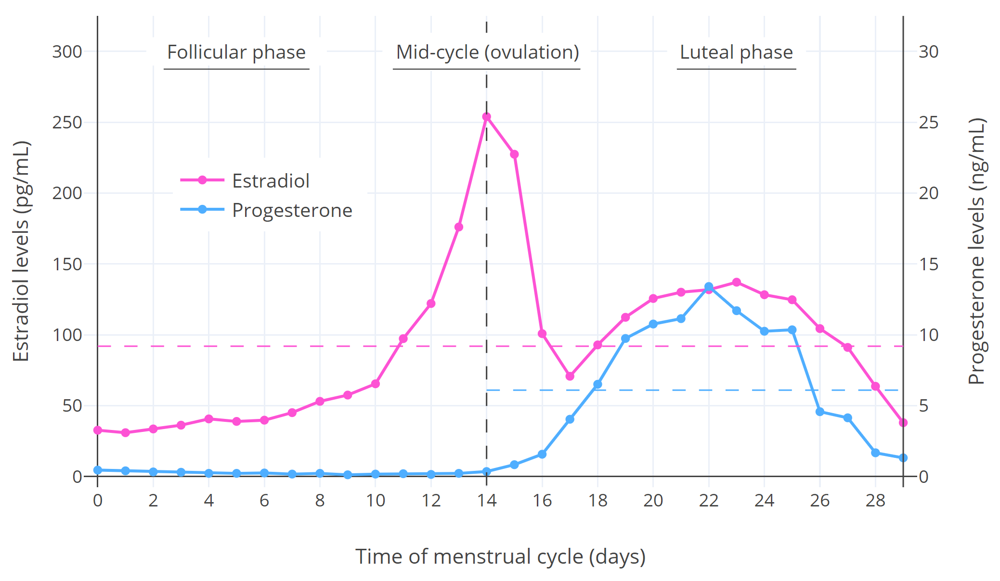
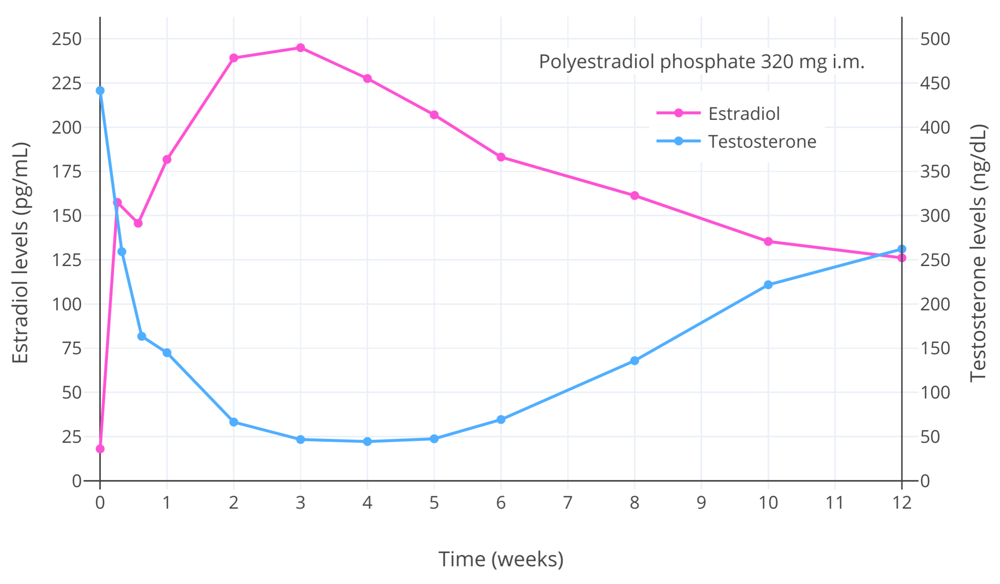
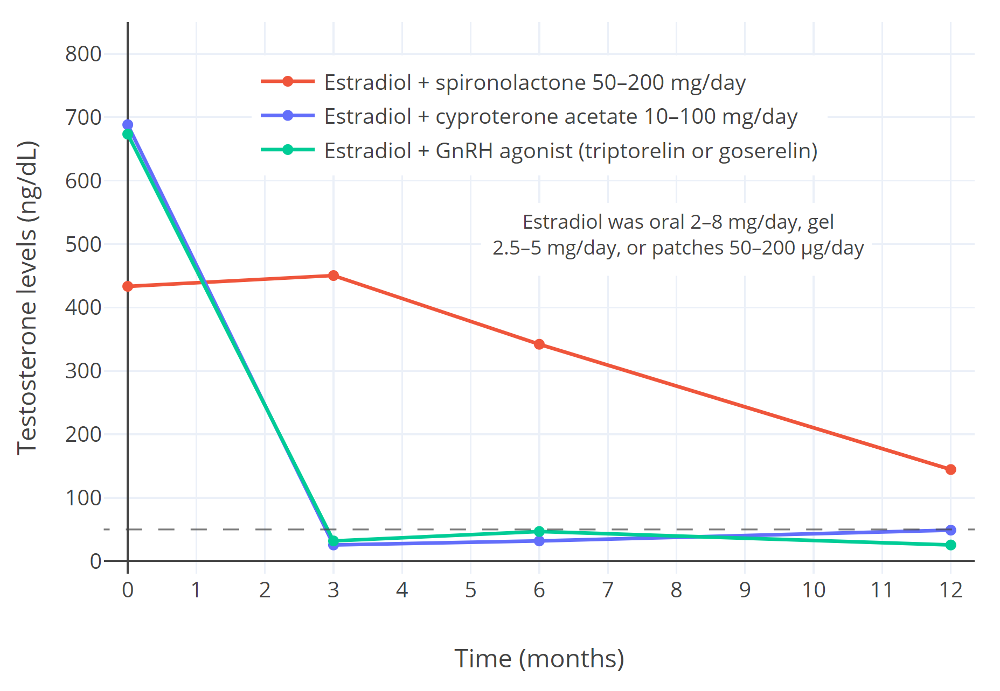

An Introduction to Hormone Therapy for Transfeminine People
By Aly | First published August 4, 2018 | Last modified June 17, 2023
Abstract / TL;DR
Sex hormones such as estrogen, testosterone, and progesterone are produced by the gonads. The sex hormones mediate the development of the secondary sexual characteristics. Testosterone causes masculinization, while estradiol causes feminization and breast development. Males have high amounts of testosterone, while females have low testosterone but high amounts of estradiol. These hormonal differences are responsible for the physical differences between males and females. Sex hormones and other hormonal medications are used in transfeminine people to shift the hormonal profile from a male-typical one to a female-typical profile. This causes feminization and demasculinization and allows for alleviation of gender dysphoria. The changes caused by transfeminine hormone therapy occur over a period of months to years. There are many different types and forms of hormonal medications, and these medications can be administered by a variety of different routes. Examples include as pills taken by mouth, as patches or gel applied to the skin, and as injections, among others. Different hormonal medications, routes, and doses have differences in efficacy, side effects, risks, costs, convenience, and availability. Hormone therapy should ideally be regularly monitored in transfeminine people with blood tests to ensure effectiveness and safety and to allow for adjustment as necessary.
The Sex Hormones
Types and Effects
The sex hormones include the estrogens (E), progestogens (P), and androgens. A person’s hormonal profile is a product of the type of gonads that they are born with. Natal males have testes while natal females have ovaries. Testes produce large amounts of androgens and small amounts of estrogens whereas ovaries produce high amounts of estrogens and progesterone and low amounts of androgens.
The major estrogen in the body is estradiol (E2), the main progestogen is progesterone (P4), and the major androgens are testosterone (T) and dihydrotestosterone (DHT). The sex hormones are responsible for and determine the secondary sex characteristics. They mediate their effects by acting as agonists (or activators) of receptors inside of cells. These receptors include the androgen receptor (AR), the estrogen receptors (ERs), and the progesterone receptors (PRs). Following their activation, these receptors modulate gene expression to influence cells and tissues.
Estrogens cause feminization. This includes breast development, softening of the skin, a feminine pattern of fat distribution (concentrated in the breasts, hips, thighs, and buttocks), widening of the hips (in those who are still of pubertal age), and other physical changes (Wiki).
Progestogens have essentially no known role in feminization or pubertal breast development. Rather than acting as mediators of feminization, progestogens have important effects in the female reproductive system and are essential hormones during pregnancy (Wiki). They also oppose the actions of estrogens in certain parts of the body, such as the uterus, vagina, and breasts (Wiki).
Androgens cause masculinization. This includes growth of the penis, broadening of the shoulders, expansion of the rib cage, muscle growth, voice deepening, a masculine pattern of fat distribution (concentrated in the stomach and waist), masculine changes in other soft tissues, and facial/body hair growth (Wiki). Androgens also cause a variety of generally undesirable skin and hair effects, including oily skin, acne, seborrhea, scalp hair loss, and body odor. They additionally oppose breast development and probably other aspects of feminization mediated by estrogens as well.
In addition to their effects on the body, sex hormones have actions in the brain. These actions influence cognition, emotions, and behavior. For instance, androgens produce pronounced sexual desire and arousal (including spontaneous erections) in men, while estrogens appear to be the major hormones responsible for sexual desire in women (Cappelletti & Wallen, 2016). Sex hormones also have important effects on health, which can be both positive and negative. For instance, estrogens maintain bone strength and likely protect against heart disease in cisgender women (NAMS, 2022), but also increase the risk of breast cancer (Aly, 2020) and can increase the risk of blood clots (Aly, 2020).
Estrogens, progestogens, and androgens also have antigonadotropic effects. That is, they inhibit the gonadotropin-releasing hormone (GnRH)-induced secretion of the gonadotropins, luteinizing hormone (LH) and follicle-stimulating hormone (FSH), from the pituitary gland in the brain. The gonadotropins signal the gonads to make sex hormones and to supply the sperm and egg cells necessary for fertility. Hence, lower levels of the gonadotropins will result in reduced gonadal sex hormone production and diminished fertility. If gonadotropin levels are sufficiently suppressed, the gonads will no longer make sex hormones at all and fertility will cease. The vast majorities of the quantities of estradiol, testosterone, and progesterone in the body are produced by the gonads. Most of the small remaining amounts of these hormones are produced via the adrenal glands of the kidneys.
Normal Hormone Levels
In cisgender females, the sex hormones are largely absent during childhood, gradually ramp up in production in late childhood and adolescence, are present in a cyclical manner during adulthood, and then largely stop being produced following the menopause. Hormone levels vary substantially but in a predictable manner during the normal menstrual cycle in adult premenopausal women. The menstrual cycle lasts about 28 days on average and consists of the following parts:
- Follicular phase—first half of the cycle or days 1–14
- Mid-cycle—middle of the cycle or days 12–16 or so
- Luteal phase—latter half of the cycle or days 14–28
Hormone levels during the menstrual cycle are shown in the following graph:
|  |
|---|
| Figure 1: Median estradiol and progesterone levels throughout the menstrual cycle in premenopausal cisgender women (Stricker et al., 2006; Abbott, 2009). The horizontal dashed lines are the average levels over the spanned periods. Other figures available elsewhere show variation between individuals (Graph; Graph; Graph). |
{kind=link}
{kind=link}
{kind=link}
As can be seen in the graph, estradiol levels are relatively low and progesterone levels are very low during the follicular phase; estradiol but not progesterone levels briefly surge to very high levels and trigger ovulation during mid-cycle; and estradiol and progesterone levels both undergo a bump and are relatively high during the luteal phase (though estradiol is not as high as during the mid-cycle peak).
The table below shows the circulating levels and production rates of estradiol, progesterone, and testosterone in women and men and allows for comparison between them.
Table 1: Ranges for circulating levelsa and estimated production ratesb of the major sex hormones:
| Hormone | Group | Time | Levels (mass/vol)c | Levels (mol/vol)c | Production rates |
|---|---|---|---|---|---|
| Estradiol | Womend | Follicular phase | 5–180 pg/mL | 20–660 pmol/L | 30–170 μg/daye |
| Mid-cycle | 45–750 pg/mL | 170–2,750 pmol/L | 320–950 μg/daye | ||
| Luteal phase | 20–300 pg/mL | 73–1100 pmol/L | 250–300 μg/daye | ||
| Men | – | 8–35 pg/mL | 30–130 pmol/L | 10–60 μg/day | |
| Progesterone | Womend | Follicular phase | ≤0.3 ng/mL | ≤1.0 nmol/L | 0.75–5 mg/day |
| Mid-cycle | 0.1–1.5 ng/mL | 0.3–4.8 nmol/L | 4 mg/day | ||
| Luteal phase | 3.5–38 ng/mL | 11–120 nmol/L | 15–50 mg/dayf | ||
| Men | – | ≤0.5 ng/mL | ≤1.6 nmol/L | 0.75–3 mg/day | |
| Testosterone | Womend | Menstrual cycle | 5–55 ng/dL | 0.2–1.9 nmol/L | 190–260 μg/day |
| Men | – | 250–1100 ng/dL | 8.7–38 nmol/L | 5–7 mg/day |
a Sources for hormone levels: Zhang & Stanczyk (2013); Nakamoto (2016); Styne (2016); LabCorp (2020). b Sources for production rates: Aufrère & Benson (1976); Powers et al. (1985); Lauritzen (1988); Carr (1993); O’Connell (1995); Kuhl (2003); Norman & Henry (2015a); Norman & Henry (2015b); Strauss & FitzGerald (2019). c With liquid chromatography–mass spectrometry (LC–MS) (state-of-the-art blood tests). d During the menstrual cycle in the adult premenopause (age ~18–50 years). e Average production rate of estradiol over the whole menstrual cycle is roughly 200 μg/day or 6 mg/month (Rosenfield, Cooke, & Radovich, 2021). f Average production rate of progesterone during the luteal phase of the menstrual cycle is about 25 mg/day (Carr, 1993).
Mean integrated estradiol levels are around 100 pg/mL (367 pmol/L) in premenopausal women and around 25 pg/mL (92 pmol/L) in men. The 95% range for mean estradiol levels in women is around 50 to 250 pg/mL (180–918 pmol/L) (e.g., Abbott, 2009 (Graph); Verdonk et al., 2019 (Graph)). The average production of estradiol by the ovaries in premenopausal women is about 6 mg over the course of one menstrual cycle (i.e., one month) (Rosenfield et al., 2008). This corresponds to a mean rate of about 200 μg/day. Estradiol levels increase slowly during normal female puberty, when breast development and feminization take place. Mean estradiol levels during the different stages of female puberty are quite low—less than about 50 to 60 pg/mL (180–220 pmol/L) until late puberty (Aly, 2020). In postmenopausal women, whose ovaries no longer produce considerable quantities of estrogens, estradiol levels are generally less than 10 to 20 pg/mL (37–73 pmol/L) (Nakamoto, 2016). Estradiol levels below 50 pg/mL (184 pmol/L) in adults are concentration-dependently associated with menopausal symptoms, including hot flashes, depressive mood changes, defeminization (e.g., breast atrophy, loss of feminine fat distribution), accelerated skin aging, and bone density loss with increased risk of bone fracture.
Mean testosterone levels are around 30 ng/dL (1.0 nmol/L) in women and 600 ng/dL (21 nmol/L) in men. Based on these values, testosterone levels are on average about 20-fold higher in men than in women. In men who have undergone gonadectomy (castration or surgical gonadal removal), testosterone levels are similar to those in women (<50 ng/dL [1.7 nmol/L]) (Nishiyama, 2014; Itty & Getzenberg, 2020). The mean or median levels of testosterone in women with polycystic ovary syndrome (PCOS), who often have clinically significant symptoms of androgen excess (e.g., excessive facial/body hair growth), range from 41 to 75 ng/dL (1.4–2.6 nmol/L) per different studies (Balen et al., 1995; Steinberger et al., 1998; Legro et al., 2010; Loh et al., 2020). Hence, it appears that even testosterone levels that are marginally elevated relative to normal female levels may produce undesirable androgenic effects.
It is important to be aware that measurement of hormone levels is subject to methodological limitations, and hormone levels vary significantly when quantified by different methods and laboratories on account of varying assay accuracy (Shackleton, 2010; Stanczyk & Clarke, 2010; Deutsch, 2016; Carmina, Stanczyk, & Lobo, 2019). Mass spectrometry (MS)-based assays, such as liquid chromatography–mass spectrometry (LC–MS), are regarded as more accurate and reliable than immunoassay (IA)-based assays, such as radioimmunoassays (RIA) and direct immunoassays like enzyme-linked immunosorbent assays (ELISA) (Stanczyk & Clarke, 2010; Carmina, Stanczyk, & Lobo, 2019). In relation to this, MS-based tests are gradually becoming the standard for laboratory testing of sex hormone levels. However, hormone levels vary between laboratories even with LC–MS, for instance due to differences in calibration of LC–MS instruments between laboratories (Carmina, Stanczyk, & Lobo, 2019). Whereas an accurate range for testosterone levels in cisgender women is 20 to 50 ng/dL (0.69–1.7 nmol/L), for instance with assays like RIA and LC–MS, the normal upper limit for direct immunoassays like ELISA may be 70 to 80 ng/dL (2.4–2.8 nmol/L) (Carmina, Stanczyk, & Lobo, 2019). When interpreting blood tests, care should be taken to compare sex hormone levels to same-laboratory reference ranges (Deutsch, 2016).
Overview of Hormone Therapy
The goal of hormone therapy for transfeminine people, otherwise known as feminizing hormone therapy (FHT) or (more in the past) as male-to-female (MtF) hormone replacement therapy (HRT), is to produce feminization and demasculinization of the body as well as alleviation of gender dysphoria. Medication therapy with sex hormones and other sex-hormonal medications is used to mediate these changes. Transfeminine people are given estrogens, progestogens, and antiandrogens (AAs) to supersede gonadal sex hormone production and shift the hormonal profile from male-typical to female-typical.
Transfeminine hormone therapy aims to achieve estradiol and testosterone levels within the normal female range. Commonly recommended ranges for transfeminine people in the literature are 100 to 200 pg/mL (367–734 pmol/L) for estradiol levels and less than 50 ng/dL (1.7 nmol/L) for testosterone levels (Table). However, higher estradiol levels of more than 200 pg/mL (734 pmol/L) can be useful in transfeminine hormone therapy to help suppress testosterone levels. Lower estradiol levels (≤50–60 pg/mL [≤180–220 pmol/L]) are recommended and more appropriate for pubertal and adolescent transfeminine individuals. Sex hormone levels in the blood can be measured with blood tests, in which blood is drawn from a vein using a needle and then analyzed in a laboratory. This is useful in transfeminine people to ensure that the hormonal profile has been satisfactorily altered in line with therapeutic goals—specifically that hormone levels are within female ranges.
Gonadal Suppression
At sufficiently high exposure, estrogens and androgens are able to completely suppress gonadal sex hormone production, while progestogens by themselves are able to partially but substantially suppress gonadal sex hormone production. More specifically, studies in cisgender men and transfeminine people have found that estradiol levels of around 200 pg/mL (734 pmol/L) generally suppress testosterone levels by about 90% (to ~50 ng/dL [1.7 nmol/L]), while estradiol levels of around 500 pg/mL (1,840 pmol/L) suppress testosterone levels by about 95% on average (to ~20–30 ng/dL [0.7–1.0 nmol/L]) (Wiki; Graphs). Estradiol levels of below 200 pg/mL (734 pmol/L) also suppress testosterone levels, although to a reduced extent compared to higher levels (Aly, 2019).
|  |
|---|
| Figure 2: Estradiol and testosterone levels after a single injection of 320 mg polyestradiol phosphate (PEP) (a long-acting prodrug of estradiol) in men with prostate cancer (Stege et al., 1996). The maximal decrease in testosterone levels occurred with estradiol levels of greater than 200 pg/mL (734 pmol/L) and was about 90% (to roughly 50 ng/dL [1.7 nmol/L]). This figure demonstrates the ability of estradiol to concentration-dependently suppress gonadal testosterone production and circulating testosterone levels in people with testes. |
Progestogens on their own are able to maximally suppress testosterone levels by about 50 to 70% (to ~150–300 ng/dL [5.2–10.4 nmol/L] on average) (Aly, 2019; Wiki). In combination with relatively small amounts of estrogen however, there is synergism in the antigonadotropic effect—the suppression of gonadal testosterone production with maximally effective doses of progestogens becomes complete, and testosterone levels are reduced by about 95% (to ~20–30 ng/dL [0.7–1.0 nmol/L]) (Aly, 2019). Hence, the combination of an estrogen and a progestogen can be used to achieve maximal testosterone suppression at lower doses than would be necessary if an estrogen or progestogen were used alone.
The antigonadotropic effects of estrogens and progestogens are taken advantage of in transfeminine hormone therapy to suppress gonadal testosterone production and attain testosterone levels that are more consistent with those in cisgender women. It should be noted that the preceding numbers on testosterone suppression with estrogens and progestogens are averages and there is significant variation between individuals in terms of testosterone suppression. In other words, some may need more or less in terms of hormonal dosages to achieve the same decrease in testosterone levels.
Timeline of Effects
During normal puberty in both males and females, sex hormone exposure increases slowly over a period of several years (Aly, 2020). In relation to this, sexual maturation occurs gradually during normal puberty. In non-adolescent transgender people, adult or higher amounts of hormones are generally administered right away, and this can result in changes in secondary sex characteristics happening more quickly. The table below is reproduced from literature sources with slight modification and is commonly cited as a timeline for the effects of hormone therapy in transfeminine people (Table). It is based on a mixture of anecdotal clinical experience, expert opinion, and available clinical studies of hormone therapy in transfeminine people. Due to limited research characterizing the effects of transfeminine hormone therapy at present, the table may or may not be completely accurate.
Table 2: Effects of hormone therapy at typical doses in adult transfeminine people (Wiki):
| Effect | Onseta | Completiona | Permanency |
|---|---|---|---|
| Breast development | 2–6 months | 2–3 years | Permanent |
| Reduced and slowed growth of facial and body hair | 3–12 months | >3 yearsb | Reversible |
| Cessation and reversal of scalp hair loss | 1–3 months | 1–2 years | Reversible |
| Softening of skin and decreased skin oiliness and acne | 3–6 months | Unknown | Reversible |
| Redistribution of body fat in a feminine pattern | 3–6 months | 2–5 years | Reversible |
| Decreased muscle mass and strength | 3–6 months | 1–2 yearsc | Reversible |
| Widening and rounding of the pelvisd | Unknown | Unknown | Permanent |
| Changes in mood, emotionality, and behavior | Immediate | Unknown | Reversible |
| Decreased sex drive and spontaneous erections | 1–3 months | 3–6 months | Reversible |
| Erectile dysfunction and decreased ejaculate volume | 1–3 months | Variable | Reversible |
| Decreased sperm production and infertility | Unknown | >3 years | Mixede |
| Decreased testicular volume | 3–6 months | 2–3 years | Unknown |
| Voice changes (e.g., decreased pitch/resonance) | Nonef | N/A | N/A |
a May vary significantly between individuals due to factors like genetics, diet/nutrition, hormone levels, etc. b Hormone therapy usually has little influence on facial hair density in transfeminine people. Complete removal of facial and body hair can be achieved with laser hair removal and electrolysis. Temporary hair removal can be achieved with shaving, epilating, waxing, and other methods. c May vary significantly depending on amount of physical exercise. d Occurs only in young individuals who have not yet completed growth plate closure (may not occur at all in post-adolescent people). e Only estrogens, particularly at high doses, seem to have the potential for long-lasting or irreversible infertility; impaired fertility caused by antiandrogens is usually readily reversible with discontinuation. f Voice training can be an effective means of feminizing the voice.
To see real-life photographic timelines of breast development and feminization with transfeminine hormone therapy, see the r/TransBreastTimelines community on the social media website Reddit.
Specific Hormonal Medications
The medications that are used in transfeminine hormone therapy include estrogens, progestogens, and antiandrogens. Estrogens produce feminization and testosterone suppression. Progestogens and antiandrogens do not mediate feminization themselves but further suppress and/or block testosterone. Testosterone suppression causes demasculinization and disinhibition of estrogen-mediated feminization. Androgens are sometimes used at low doses in transfeminine people who have low testosterone levels, although they are not required and benefits are uncertain. There are many different types of these hormonal medications available for transfeminine hormone therapy, with different benefits and risks.
Estrogens, progestogens, and antiandrogens are available in a variety of different formulations and for use by many different routes of administration in transfeminine people. The route of administration influences the absorption, distribution, metabolism, and elimination of the hormone in the body, resulting in significant differences between routes in terms of bioavailability, hormone levels in blood and specific tissues, and patterns of metabolites. These differences can have important therapeutic consequences.
Table 3: Major routes of administration of hormonal medications for transfeminine people:
| Route | Abbr. | Description | Typical forms |
|---|---|---|---|
| Oral administration | PO | Swallowed | Tablet, capsule |
| Sublingual administration | SL | Held and absorbed under tongue | Tablet |
| Buccal administration | BUC | Held and absorbed in cheek or under lips | Tablet |
| Transdermal administration | TD | Applied to and absorbed through the skin | Patch, gel, cream |
| Rectal administration | REC | Inserted into and absorbed by rectum | Suppository |
| Intramuscular injection | IM | Injected into muscle (e.g., buttocks, thigh, arm) | Solution (vial/amp.) |
| Subcutaneous injection | SC | Injected into fat under skin | Solution (vial/amp.) |
| Subcutaneous implant | SCi | Insertion via surgical incision into fat under skin | Pellet |
Vaginal administration is a major additional route of administration of hormonal medications in cisgender women. While vaginal administration via a natal vagina is of course not possible in transfeminine people, neovaginal administration is a possiblility in those who have undergone vaginoplasty. However, the lining of the neovagina is not the vaginal epithelium of natal females but instead is usually skin or colon—depending on the type of vaginoplasty performed (penile inversion or sigmoid colon vaginoplasty, respectively). For this reason, neovaginal administration in transfeminine people is likely more similar in its properties to transdermal and rectal administration—depending on the type of neovagina—than to vaginal administration in cisgender women. It is noteworthy that the vaginal and rectal routes are said to be similar in their properties for hormonal medications however (Goletiani, Keith, & Gorsky, 2007; Wiki). Moreover, absorption of estradiol via neovaginas constructed from peritoneum (internal abdominal lining)—a less commonly employed vaginoplasty approach in transfeminine people—was reported in one study to be similar to that with vaginal administration of estradiol in cisgender women (Willemsen et al., 1985). As such, neovaginal administration may be an additional possible route for certain transfeminine people depending on the circumstances. However, this route still remains to be more adequately characterized.
Estrogens
Estradiol, the primary bioidentical form normally found in the human body, is the main estrogen that is used in transfeminine hormone therapy. Estradiol hemihydrate (EH) is another form that is essentially identical to and interchangeable with estradiol. Estradiol esters are also sometimes used in place of estradiol. They are prodrugs of estradiol (i.e., are converted into estradiol in the body) and have essentially identical biological activity to estradiol. However, they have longer durations when used by injection due to slower absorption from the injection site, and this allows them to be administered less often. Some examples of major estradiol esters include estradiol valerate (EV; Progynova, Progynon Depot, Delestrogen) and estradiol cypionate (EC; Depo-Estradiol). Polyestradiol phosphate (PEP; Estradurin) is an injectable estradiol prodrug in the form of a polymer (i.e., linked chain of estradiol molecules) which is metabolized slowly and has a very long duration.
Non-bioidentical estrogens such as ethinylestradiol (EE; found in birth control pills), conjugated estrogens (CEEs; Premarin; used in menopausal hormone therapy), and diethylstilbestrol (DES; widely used previously but now abandoned) are resistant to metabolism in the liver and have disproportionate effects on estrogen-modulated liver synthesis when compared to bioidentical estrogens like estradiol (Aly, 2020). As a result, they have stronger influence on coagulation and greater risk of certain health problems like blood clots and associated cardiovascular issues (Aly, 2020). For this reason, as well as the fact that relatively high doses of estrogens may be needed for testosterone suppression, non-bioidentical estrogens should ideally never be used in transfeminine hormone therapy.
Physiological levels of estradiol are usually not sufficient to suppress testosterone levels into the female range in gonadally intact transfeminine people. As a result, estradiol is generally used in combination with an antiandrogen or progestogen in transfeminine hormone therapy. This results in partial suppression of testosterone levels by estradiol and further suppression or blockade of the remaining testosterone by the antiandrogen or progestogen. The addition of an antiandrogen or progestogen to estradiol therapy however also adds the side effects, risks, and costs of these medications. An alternative to the combination of estradiol with an antiandrogen or progestogen which may be used in transfeminine people is high-dose estradiol monotherapy. This is an approach in which estradiol is used alone at supraphysiological doses. These high doses can allow for greater testosterone suppression and reduction of testosterone levels into the female range with estradiol alone.
The feminizing effects of estradiol appear to be maximal at low levels in the absence of androgens. Higher doses of estradiol, aside from allowing for greater testosterone suppression, are not known to result in better feminization in transfeminine people (Deutsch, 2016; Nolan & Cheung, 2021). In fact, there is indication that higher estrogen doses early into hormone therapy could actually result in worse breast development. Hence, the therapeutic emphasis in transfeminine hormone therapy is more on testosterone suppression than on achieving a certain estradiol level. Higher doses of estrogens, including estradiol, also have a greater risk of adverse health effects such as blood clots and cardiovascular problems (Aly, 2020). As such, the use of physiological doses of estradiol is optimal. At the same time however, high estrogen doses can be useful for testosterone suppression. Moreover, the absolute risks in the case of non-oral bioidentical estradiol are low and are more important in people with specific risk factors. Examples of such risk factors include older age, physical inactivity, obesity, concomitant progestogen use, smoking, surgery, and rare thrombophilic abnormalities. In healthy young people without relevant risk factors, limitedly supraphysiological doses of non-oral estradiol for purposes of adequate testosterone suppression may be more acceptably safe (Aly, 2020).
Estradiol and estradiol esters are usually used orally, sublingually, transdermally, by injection (intramuscularly or subcutaneously), or by implant in transfeminine hormone therapy (Wiki).
Oral Estradiol
Estradiol is used orally in the form of tablets of estradiol (Wiki; Graphs). Alternatively, oral estradiol valerate tablets are used in some countries, for instance in many European countries. The only real differences between these oral estradiol forms is that estradiol valerate contains slightly less estradiol by weight (~76%) due to its ester component and hence requires somewhat higher doses (~1.3-fold) in comparison for equivalent estradiol levels (Wiki; Table). Oral estradiol has a duration suitable for once-daily administration. Oral administration of estradiol is a very convenient and inexpensive route, which makes it the most popular and widely used form of estradiol in transfeminine people. Oral estradiol has relatively low bioavailability (~5%), and there is substantial variability between people in terms of estradiol levels achieved with the same dose. Hence, in some transfeminine people estradiol levels may be low with oral estradiol, and testosterone suppression may be inadequate depending on the antiandrogen.
A major drawback of oral estradiol is that it results in excessive levels of estradiol in the liver due to the first pass that occurs with oral administration and has a disproportionate impact on estrogen-modulated liver synthesis (Aly, 2020). This in turn increases coagulation and the risk of associated health complications like blood clots and cardiovascular problems (Aly, 2020). These particular health concerns are largely allayed if estradiol is taken non-orally at reasonable and non-excessive doses. Hence non-oral forms of estradiol, like transdermal estradiol, although less convenient and often more expensive than oral estradiol, are preferable in transfeminine hormone therapy. It is recommended that all transfeminine people who are over 40 to 45 years of age use non-oral routes due to the greater risk of blood clots and cardiovascular problems that occurs with age (Aly, 2020; Coleman et al., 2022). Oral estradiol is not a good choice for high-dose estradiol monotherapy in transfeminine people due to the high estradiol levels required and the greater risks than with non-oral routes. In addition to its disproportionate liver impact, oral estradiol results in unphysiological levels of estradiol metabolites like estrone and estrone sulfate when compared to non-oral forms. The clinical implications of this, if any, are unknown. Oral and non-oral estradiol have in any case been found to have similar effectiveness in terms of feminization and breast development in transfeminine people in available studies (Sam, 2020).
Sublingual Estradiol
Oral estradiol tablets can be taken sublingually instead of orally. Sublingual use of estradiol tablets has several-fold higher bioavailability relative to oral administration and hence achieves much higher overall estradiol levels in comparison (Sam, 2021; Wiki; Graphs). Sublingual use of oral estradiol tablets can be employed instead of oral administration to reduce doses and hence medication costs or to produce higher estradiol levels for the purpose of achieving better testosterone suppression when needed. However, sublingual estradiol is very spiky in terms of estradiol levels when compared to oral estradiol and has a short duration of highly elevated estradiol levels. As such, it may be advisable for sublingual estradiol to be used in divided doses multiple times throughout the day in order to maintain at least somewhat steadier estradiol levels. The therapeutic implications for transfeminine people of the spikiness of sublingual estradiol, for instance in terms of testosterone suppression and health risks, have been little-studied and are mostly unknown. Oral estradiol valerate tablets can be taken sublingually instead of orally similarly to estradiol and are likewise highly effective when used in this way (Aly, 2019; Wiki). Due to partial swallowing of tablets, sublingual estradiol may in practice be a mixture of sublingual and oral administration and may have some of the same health risks of oral estradiol (Wiki). Buccal administration of estradiol appears to have similar properties as sublingual administration but is much less researched in comparison and is not used as often in transfeminine people (Wiki).
Transdermal Estradiol
Transdermal estradiol is available in the form of patches, gel, emulsions, and sprays (Wiki). These forms are usually applied to skin areas such as the arms, abdomen, or buttocks. Gel, emulsions, and sprays are applied and left to dry for a short period, whereas patches are applied and remain adhesed to the skin for a specified amount of time. Due to rate-limited absorption through the skin, there is a depot effect with transdermal estradiol and this route has a long duration with very steady estradiol levels. As a result, estradiol gel, emulsions, and sprays are all suitable for once-daily use. Patches stay applied and continuously deliver estradiol for either 3–4 days or 7 days depending on the patch brand (Table). Transdermal estradiol is more expensive than oral estradiol. Gel, emulsions, and sprays may be less convenient than oral administration, but patches can be more convenient due to their infrequent application. However, patches can sometimes cause application site problems like redness and irritation and can occasionally come off prematurely due to adhesive failure. As with oral estradiol, there is substantial variability in estradiol levels with transdermal estradiol, and some transfeminine people may have poor absorption, low estradiol levels, and inadequate testosterone suppression with this route. Estradiol sprays, such as Lenzetto, have been found to achieve very low estradiol levels that are probably not therapeutically adequate for use in transfeminine hormone therapy (Aly, 2020; Graph).
_in_postmenopausal_women.png){kind=link}
Transdermal estradiol is the form of estradiol most commonly used in transfeminine people who are over 40 years of age due to its lower health risks relative to oral estradiol. Transdermal estradiol gel is not a favorable option for high-dose estradiol monotherapy as it has difficulty achieving the high estradiol levels needed for adequate testosterone suppression (Aly, 2019). On the other hand, transdermal estradiol patches can be an effective option for high-dose estradiol monotherapy if multiple 100 μg/day patches are used (Wiki). Different skin sites absorb transdermal estradiol to different extents (Wiki). Genital application of transdermal estradiol, specifically to the scrotum or neolabia, is particularly better-absorbed than conventional skin sites and can result in much higher estradiol levels than usual (Aly, 2019). This can be useful for reducing doses and hence medication costs or for achieving higher estradiol levels for better testosterone suppression when needed. Transdermal estradiol should not be applied to the breasts as this is not known to result in improved breast development and the potential health consequences of doing so are unknown (e.g., influence on breast cancer risk).
Injectable Estradiol
Injectable estradiol preparations can be administered via either intramuscular or subcutaneous injection (Wiki; Wiki; Graphs). There is a depot effect with injection of estradiol esters such that they are slowly absorbed from the injection site and have a prolonged duration. This ranges from days to months depending on the ester. Commonly used injectable estradiol esters, which all have short to moderate durations, include estradiol valerate (EV), estradiol cypionate (EC), estradiol enanthate (EEn), and estradiol benzoate (EB). Longer-acting injectable estradiol esters, such as estradiol undecylate (EU) and polyestradiol phosphate (PEP), have been discontinued and are no longer pharmaceutically available. In the case of intramuscular injection, common injection sites include the deltoid muscle (upper arm), vastus lateralis and rectus femoris muscles (thigh), and ventrogluteal muscle (buttocks). Subcutaneous injection of estradiol injectables, while less commonly used, has comparable pharmacokinetics to intramuscular injection, and is easier, less painful, and more convenient in comparison (Wiki). However, the maximum volume that can be safely and comfortably injected subcutaneously is less than that which can be injected intramuscularly (depending on the site up to 1.5–3 mL and up to 2–5 mL, respectively) (Hopkins, & Arias, 2013; Usach et al., 2019). Injectable estradiol tends to be fairly inexpensive, but may be less convenient than other routes due to the need for regular injections. There may also be a risk of internal scar tissue build-up long-term. Estradiol injectables have been discontinued in many parts of the world (e.g., most of Europe), and their availability is limited. In recent years, many transfeminine people have turned to black market homebrewed injectable estradiol preparations to use this route.
Injectable estradiol preparations are typically used at higher doses than other forms of estradiol, and can easily achieve very high levels of estradiol. This can be useful for testosterone suppression, making this form of estradiol likely the best choice for high-dose estradiol monotherapy in transfeminine people. However, the high doses that are possible with injectable estradiol preparations can also easily lead to overdosage and unnecessarily increased risks (e.g., Aly, 2020). Resources are available on this site for guiding selection of appropriate doses and intervals of injectable estradiol esters in transfeminine people. This includes a simulator and informal meta-analysis of estradiol levels with these preparations (Aly, 2021; Aly, 2021) and a table providing approximate equivalent doses between injectable estradiol esters and other estradiol routes and forms (Aly, 2020). It is notable and unfortunate that currently recommended doses and intervals for injectable estradiol esters by transgender care guidelines (e.g., 10–40 mg/2 weeks estradiol valerate) appear to be highly excessive and too widely spaced, and are likely to be therapeutically inadvisable (Aly, 2021). Doses and intervals of injectable estradiol esters recommended by the present author for use as a means of high-dose estradiol monotherapy, targeting mean estradiol levels of around 300 pg/mL (1,100 pmol/L), are provided below (Table 4).
Table 4: Recommended doses and intervals of injectable estradiol esters for high-dose estradiol monotherapy (targeting estradiol levels of around 300 pg/mL [1,100 pmol/L]):
| Estradiol Ester | Short | Medium | Long | Simulation |
|---|---|---|---|---|
| Estradiol benzoate | 0.67 mg/1 day | 1.33 mg/2 days | 2 mg/3 days | Graph |
| Estradiol valerate | 2 mg/3 days | 3.5 mg/5 days | 5 mg/7 days | Graph |
| Estradiol cypionate (in oil) | 5 mg/7 days | 7 mg/10 days | 10 mg/14 days | Graph |
| Estradiol cypionate (suspension) | 2 mg/3 days | 3.5 mg/5 days | 5 mg/7 days | Graph |
| Estradiol enanthate | 5 mg/7 days | 7 mg/10 days | 10 mg/14 days | Graph |
| Estradiol undecylatea | 10 mg/14 days | 20 mg/28 days | 30 mg/42 days | Graph |
| Polyestradiol phosphate | 160 mg/30 days | 240 mg/45 days | 320 mg/60 days | Graph |
a Doses and intervals for estradiol undecylate are extrapolated and hypothetical (Aly, 2021).
These doses and intervals should be considered a starting point, and should be fine-tuned as necessary based on blood tests. In terms of injection intervals, the shorter interval, the more stable the estradiol levels, but the more often that injections need to be done. Doses may be increased if estradiol levels are too low and testosterone suppression is inadequate, and doses may be decreased if estradiol levels are too high so long as adequate testosterone suppression is maintained. Doses should be lower (targeting mean estradiol levels of 100–200 pg/mL [367–734 pmol/L]) if combined with an antiandrogen or progestogen as these agents will help with testosterone suppression. Similarly, doses should be lower following surgical gonadal removal as testosterone suppression will no longer be necessary.
Estradiol Pellets
Estradiol implants are pellets of pure crystalline hormone and are surgically placed into subcutaneous fat by a physician (Wiki). They are slowly absorbed by the body following implantation, and new implants are given once every 4 to 6 months. Due to the need for minor surgery, their high cost, and limited availability, estradiol implants are not as commonly used as other estradiol routes. Notably, almost all pharmaceutical estradiol implants throughout the world have been discontinued, and the implants that remain available are almost exclusively compounded products provided by compounding pharmacies. Dosage adjustment with estradiol implants is also more difficult than with other estradiol routes. Despite their various practical limitations however, estradiol implants allow for very steady estradiol levels, and their very long duration can allow for unusual convenience among available estradiol forms.
Additional Notes
Table 5: Available forms and recommended doses of estradiol for adulta transfeminine people:
| Medication | Route | Form | Dosage |
|---|---|---|---|
| Estradiol | Oral | Tablets | 2–8 mg/day |
| Sublingual or buccal | Tablets | 0.5–6 mg/dayb | |
| Transdermal | Patches | 50–400 μg/day | |
| Gel | 1.5–6 mg/day | ||
| Sprays | Not recommendedc | ||
| SC implant | Pellet | 25–150 mg/6 months | |
| Estradiol valerate | Oral | Tablets | 3–10 mg/dayd |
| Sublingual or buccal | Tablets | 1–8 mg/dayb,d | |
| IM or SC injection | Oil solution | 0.75–4 mg/5 days; or 1–6 mg/7 days; or 1.5–9 mg/10 days | |
| Estradiol cypionate | IM or SC injection | Oil solution | 1–6 mg/7 days; or 1.5–9 mg/10 days; or 2–12 mg/14 days |
| Aqueous suspension | 0.75–4 mg/5 days; or 1–6 mg/7 days; or 1.5–9 mg/10 days | ||
| Estradiol enanthate | IM or SC injection | Oil solution | 1–6 mg/7 days; or 1.5–9 mg/10 days; or 2–12 mg/14 days |
| Estradiol benzoate | IM or SC injection | Oil solution | 0.15–0.75 mg/day; or 0.3–1.5 mg/2 days; or 0.45–2.25 mg/3 days |
| Estradiol undecylatee | IM or SC injection | Oil solution | 2–12 mg/14 days; or 4–24 mg/28 days; or 6–36 mg/42 days |
| Polyestradiol phosphate | IM injection | Water solution | 40–160 mg/monthf |
a Estradiol doses in pubertal adolescent transfeminine people should be lower to mimic estradiol exposure during normal female puberty (Aly, 2020). b May be advisable to use divided doses 2 to 4 times per day (i.e., once every 6 to 12 hours) instead of once per day (Sam, 2021). c This estradiol form achieves very low estradiol levels at typical doses that don’t appear to be well-suited for transfeminine hormone therapy (Aly, 2020; Graph). d Estradiol valerate contains about 75% of the same amount of estradiol as estradiol so doses are about 1.3-fold higher for the same estradiol levels (Aly, 2019; Sam, 2021). e Doses and intervals for estradiol undecylate are extrapolated and hypothetical (Aly, 2021). f A higher initial loading dose of e.g., 240 or 320 mg polyestradiol phosphate can be used for the first one or two injections to reach steady-state estradiol levels more quickly. However, this preparation has recently been discontinued and appears to no longer be available.
Additional informational resources are available in terms of estradiol levels (Wiki; Table) and approximate equivalent doses (Aly, 2020) with different forms, routes, and doses of estradiol.
There is high variability between individuals in the levels of estradiol achieved during estradiol therapy. That is, estradiol levels during treatment with the same dosage of estradiol can differ substantially between individuals. This variability is greatest with oral and transdermal estradiol but is also considerable even with injectable estradiol preparations and other estradiol forms. As such, estradiol doses are not absolute and should be individualized on a case-by-case basis in conjunction with blood work as a guide. It should also be noted that due to fluctuations in estradiol concentrations with certain routes, levels of estradiol can vary considerably from one blood test to another. This is most notable with sublingual estradiol and injectable estradiol. The fluctuations in estradiol levels with these routes are predictable and must be understood when interpreting blood work results. Differences in blood test results can be minimized with informed and consistent timing of blood draws.
If or when the gonads are surgically removed, testosterone suppression is no longer needed in transfeminine people. As a result, estradiol doses, if they are high or supraphysiological, can be lowered to more closely approximate normal physiological levels in cisgender women.
Progestogens
Progestogens include progesterone and progestins. Progestins are synthetic progestogens derived from structural modification of progesterone or testosterone. There are dozens of different progestins and these progestins can be divided into a variety of different structural classes with varying properties (Table). Examples of some major progestins of different classes include the 17α-hydroxyprogesterone derivative medroxyprogesterone acetate (MPA; Provera, Depo-Provera), the 19-nortestosterone derivative norethisterone (NET; many brand names), the retroprogesterone derivative dydrogesterone (Duphaston), and the 17α-spirolactone derivative drospirenone (Slynd, Yasmin). Progestins were developed because they have a more favorable disposition in the body than progesterone for use as medications. Only a few clinically used progestins have been used in transfeminine hormone therapy. However, progestogens largely produce the same progestogenic effects, with a few exceptions, and theoretically almost any progestogen could be employed.
Progestogens have antigonadotropic effects via their progestogenic activity and dose-dependently suppress the secretion of the gonadotropins from the pituitary gland. This in turn results in a reduction of gonadotropin-mediated gonadal stimulation and a decrease in sex hormone production as well as fertility. The dose-dependent testosterone-suppressing effects of a variety of different progestogens have been characterized in clinical studies in cisgender men and transfeminine people (Nieschlag, Zitzmann, & Kamischke, 2003; Nieschlag, 2010; Nieschlag & Behre, 2012; Zitzmann et al., 2017; Aly, 2019). Some notable examples of this include cyproterone acetate (CPA) (Aly, 2019; Wiki), MPA (Wiki), NET (Wiki) and its ester norethisterone acetate (NETA) (Wiki), levonorgestrel (LNG) (Zitzmann et al., 2017; Wiki), desogestrel (DSG) (Wu et al., 1999; Wiki), dienogest (DNG) (Meriggiola et al., 2002; Wiki), and progesterone (Wiki), among others. High doses of progestogens by themselves are able to maximally suppress testosterone levels by about 50 to 70% on average (Aly, 2019; Zitzmann et al., 2017 (Graph)). In combination with estrogen however, this increases to about 95%, with testosterone levels suppressed into the normal female range (Aly, 2019). Progestogens seem to usually achieve their maximal testosterone-suppressing capacity at a dose of around 5 to 10 times their ovulation-inhibiting dosage in cisgender women (Aly, 2019). Due to low potency or atypicality, oral progesterone and dydrogesterone are exceptions among progestogens which do not have significant antigonadotropic effects and which would not be expected to suppress testosterone levels (Aly, 2018; Wiki; Wiki).
{kind=link}
Besides helping with testosterone suppression, progestogens are of no clear or known benefit for feminization or breast development in transfeminine people. While some transfeminine people anecdotally claim to experience improved breast development with progestogens, an involvement of progestogens in improving breast size or shape is controversial and is not supported by theory nor evidence at present (Wiki; Aly, 2020). It is possible that premature introduction of progestogens, particularly at high doses, could actually have an unfavorable influence on breast development (Aly, 2020). Many transfeminine people have also anecdotally claimed that progestogens have a beneficial effect on their sexual desire. However, a review of the literature by the present author found that neither progesterone nor progestins positively influence sexual desire in humans (Aly, 2020). Instead, the available evidence suggests either a neutral influence or an inhibitory effect of progestogens on sexual desire, although the latter may be specific only to high doses of progestogens (Aly, 2020). Claims have been made that progesterone may have beneficial effects on mood in transfeminine people as well, but clinical support for such notions is likewise lacking at this time (Coleman et al., 2022; Nolan et al., 2022). It is notable that progesterone at luteal-phase levels, due to its neurosteroid metabolites like allopregnanolone, actually appears to worsen mood in around 30% of cisgender women, and produces more overt negative reactions, which constitute the diagnoses of premenstrual syndrome (PMS) and premenstrual dysphoric disorder (PMDD), in around 2 to 10% of women (Bäckström et al., 2011; Edler Schiller, Schmidt, & Rubinow, 2014; Sundström-Poromaa et al., 2020). More research is needed to evaluate the possible beneficial effects of progestogens in transfeminine people.
Most clinically used progestogens have off-target activities in addition to their progestogenic activity, and these activities may be desirable or undesirable depending on the action in question (Kuhl, 2005; Stanczyk et al., 2013; Wiki; Table). Progesterone has a variety of neurosteroid as well as other activities that can result in central nervous system effects among others which are not shared by progestins. MPA as well as NET and its derivatives have weak androgenic activity, which is unfavorable in the context of transfeminine hormone therapy. NET and certain related progestins produce ethinylestradiol as a metabolite at high doses and hence can produce ethinylestradiol-like estrogenic effects, including increased risk of blood clots and associated cardiovascular problems. Other off-target actions of progestogens include antiandrogenic, glucocorticoid, and antimineralocorticoid activities. These actions can result in differences in therapeutic effectiveness (e.g., androgen suppression or blockade) as well as side effects and health risks. Some notable progestins without undesirable off-target activities (i.e., androgenic or glucocorticoid activity) include low-dose CPA, drospirenone (DRSP), dienogest, nomegestrol acetate (NOMAC), dydrogesterone, and hydroxyprogesterone caproate (OHPC). However, of these progestins, only CPA has been considerably used and studied in transfeminine people.
The addition of progestogens to estrogen therapy has been associated with a number of unfavorable health effects. These include increased risk of blood clots (Wiki; Aly, 2020), coronary heart disease (Wiki), and breast cancer (Wiki; Aly, 2020). High doses of progestogens are also associated with increased risk of certain non-cancerous brain tumors including meningiomas and prolactinomas (Wiki; Aly, 2020). The coronary heart disease risk may be due to changes in blood lipids caused by the weak androgenic activity of certain progestogens, but the rest of the aforementioned risks are probably due to their progestogenic activity (Stanczyk et al., 2013; Jiang & Tian, 2017). Aside from health risks, progestogens have also been associated with adverse mood changes (Wiki; Wiki). However, besides the case of progesterone and its neurosteroid metabolites, these effects of progestogens are controversial and are not well-supported by evidence (Wiki; Wiki). Progestogens are otherwise generally well-tolerated and are regarded as producing little in the way of side effects.
In contrast to certain progestins, progesterone has no unfavorable off-target activities. Due to its lack of androgenic activity, progesterone has no adverse influence on blood lipids and is not expected to raise the risk of coronary heart disease. The addition of oral progesterone to estrogen therapy notably has not been associated with increased risk of blood clots (Wiki). In addition, oral progesterone seems to have less risk of breast cancer than progestins with short-term therapy, although this is notably not the case with longer-term exposure (Wiki; Aly, 2020). Consequently, it has been suggested that progesterone, for reasons that have yet to be fully elucidated, may be a safer progestogen than progestins and that it should be the preferred progestogen for hormone therapy in cisgender women and transfeminine people. However, there are also theoretical arguments against such notions. Oral progesterone is known to produce very low progesterone levels and to have only weak progestogenic effects at typical doses (Aly, 2018; Wiki). The seemingly better safety of oral progesterone may simply be an artifact of the low progesterone levels that occur with it, and hence of progestogenic dosage. Non-oral progesterone, at doses resulting in physiological and full progestogenic strength, has never been properly evaluated in terms of health outcomes, and may have similar risks as progestins (Aly, 2018; Wiki).
Due to their lack of known influence on feminization and breast development and their known and possible adverse effects and risks, progestogens are not routinely used in transfeminine hormone therapy at present. Major transgender health guidelines note the limitations of the available evidence on progestogens for transfeminine people and have mixed attitudes on their use, either explictly recommending against their use (Coleman et al., 2022—WPATH SOC8), taking a more neutral stance (Hembree et al., 2017—Endocrine Society guidelines), or being permissive of their use (Deutsch, 2016—UCSF guidelines). There is however a very major exception to the preceding in the form of CPA, an antiandrogen which is widely used in transfeminine hormone therapy to suppress testosterone production and which happens to be a powerful progestogen at the typical doses used in transfeminine people. CPA will be described below in the section on antiandrogens. Although progestogens have various health risks, cisgender women of course have progesterone, and the absolute risks of progestogens are very low in healthy young people. Risks like breast cancer also are exposure-dependent and take many years to develop. The testosterone suppression provided by progestogens can furthermore be very useful in transfeminine people, as is widely taken advantage of with CPA. Given these considerations, a limited duration of progestogen therapy in transfeminine people, for instance a few years to help suppress testosterone levels before surgical gonadal removal, may be considered quite acceptable.
Progesterone can be used in transfeminine people by oral administration, sublingual administration, rectal administration, or by intramuscular or subcutaneous injection (Wiki). Progestins are usually used via oral administration, but certain progestins are also available in injectable formulations (Wiki).
Oral Progesterone
Progesterone is most commonly taken orally. It is used by this route in the form of oil-filled capsules containing 100 or 200 mg micronized progesterone under brand names such as Prometrium, Utrogestan, and Microgest (Wiki). Despite its widespread use, levels of progesterone via oral administration have been found using state-of-the-art assays (LC–MS) to be very low (<2 ng/mL [<6.4 nmol/L] at 100 mg/day) and inadequate for satisfactory progestogenic effects in various areas (Aly, 2018; Wiki). In relation to this, even high doses of oral progesterone (400 mg/day) showed no antigonadotropic effect or testosterone suppression in cisgender men (Aly, 2018; Wiki). This is in major contrast to non-oral forms of progesterone and to progestins, which produce dose-dependent and robust testosterone suppression (Aly, 2019; Wiki). In addition to its low progestogenic potency, oral progesterone is excessively converted into neurosteroid metabolites like allopregnanolone and pregnanolone. These metabolites act as potent GABAA receptor positive allosteric modulators, and can produce undesirable alcohol-like side effects such as sedation, cognitive, memory, and motor impairment, and mood changes (Wiki; Wiki). As such, while inconvenient, non-oral routes are greatly preferable for progesterone.
Sublingual Progesterone
Sublingual progesterone tablets exist and are marketed under the brand name Luteina but today are only available in Poland and Ukraine (Wiki). Oral progesterone could theoretically be taken sublingually, analogously to sublingual use of oral estradiol. However, because oral progesterone is formulated as oil-filled capsules, this makes it difficult and unpleasant to use by sublingual administration. Buccal progesterone, which would be expected to have similar characteristics to those of sublingual progesterone, has been used in medicine in the past, but is no longer marketed today (Wiki).
Rectal Progesterone
Progesterone is approved for use by rectal administration in the form of suppositories under the brand name Cyclogest (Wiki). This product is marketed in only a limited number of countries however, although it is available in the United Kingdom (Wiki). While not approved for use by rectal administration, oral progesterone capsules can be taken rectally instead of orally, and using them in this way may allow for much higher progesterone levels than would be achieved by oral administration due to avoidance of most first-pass metabolism. Rectal administration of oral progesterone capsules has not been formally studied, but oral progesterone capsules have been administered vaginally in cisgender women with success (Miles et al., 1994; Wang et al., 2019), and the vaginal and rectal routes are said to have similar pharmacokinetics in general (Goletiani, Keith, & Gorsky, 2007; Wiki). Hence, there is good theoretical basis for rectal administration of oral progesterone capsules being an effective route of administration of progesterone. Whereas oral progesterone achieves very low levels of progesterone, rectal progesterone can readily achieve normal luteal-phase levels of progesterone (Wiki). Although inconvenient, rectal administration may be the overall best route of administration of progesterone for transfeminine people.
Injectable Progesterone
Progesterone by injection is available as an oil solution for intramuscular injection under brand names such as Proluton, Progestaject, and Gestone (Wiki) and as an aqueous solution for subcutaneous injection under the brand name Prolutex (Wiki). Oil solutions of progesterone for intramuscular injection are widely available, whereas the aqueous solution of progesterone for subcutaneous injection is available only in some European countries (Wiki). Injectable progesterone, regardless of route, has a relatively short duration and must be injected once every one to three days (Wiki; Wiki). This makes it too inconvenient to use for most people. Unlike with estradiol, progesterone esters with longer durations than progesterone itself by injection are not chemically possible as progesterone has no hydroxyl groups available for esterification (Wiki). Injectable aqueous suspensions of microcrystalline progesterone were previously marketed and had a duration of 1 to 2 weeks, but these preparations were associated with pain at the injection site and were eventually discontinued (Aly, 2019; Wiki).
Other Progesterone Routes
Other progesterone routes, such as transdermal progesterone and subcutaneous progesterone pellets, are also known, but are not available as pharmaceutical drugs and are little-used medically (Wiki). This is related to the low potency of progesterone and difficulty achieving progesterone levels high enough for adequate therapeutic effects with these routes (Wiki; Wiki). In addition, progesterone pellets tend to be extruded at high rates (Wiki). In any case, certain compounding pharmacies may make forms of progesterone that could be used by these routes.
Oral and Injectable Progestins
Most progestins are taken orally in the form of solid tablets (Wiki). In contrast to progesterone, progestins, owing to their synthetic nature, are resistant to metabolism in the intestines and liver and have high oral bioavailability. In addition, unlike the case of the estrogen receptors, the progesterone receptors are expressed minimally or not at all in the liver, and there is no known first pass influence of progestogenic activity on liver synthesis (Lax, 1987; Stanczyk, Mathews, & Cortessis, 2017). As a result, there are no apparent problems with oral administration in the case of purely progestogenic progestins. However, some progestins have liver-impacting off-target hormonal actions, such as androgenic, estrogenic, and/or glucocorticoid activity, and this can result in adverse effects like unfavorable lipid changes or procoagulation—which may be augmented by the first pass with oral administration.
A selection of progestins are available in injectable formulations, including for intramuscular or subcutaneous injection (Wiki). Some of the more notable ones include medroxyprogesterone acetate (MPA), norethisterone enanthate (NETE), hydroxyprogesterone caproate (OHPC), and algestone acetophenide (dihydroxyprogesterone acetophenide; DHPA) (Wiki). In addition to being used alone, injectable progestins are used together with estradiol esters in combined injectable contraceptives (Wiki). These preparations are often used as a means of hormone therapy by transfeminine people in Latin America. Whereas injectable progesterone has a duration measured in days, injectable progestins have durations ranging from weeks to months, and can be injected much less often in comparison (Table).
Additional Notes
Table 6: Available forms and recommended doses of progestogens for transfeminine people:
| Medication | Route | Form | Dosage |
|---|---|---|---|
| Progesterone | Oral | Oil-filled capsules | 100–300 mg 1–2x/day |
| Rectal | Suppositories; Oil-filled capsules | 100–200 mg 1–2x/day | |
| IM injection | Oil solution | 25–75 mg/1–3 days | |
| SC injection | Water solution | 25 mg/day | |
| Progestins | Oral; IM or SC injection | Tablets; Oil solution; Water solution | Various |
For progesterone levels with different forms, routes, and doses of progesterone, see the table here (only LC–MS and IA + CS assays for oral progesterone) and the graphs here.
As with estradiol, there is high variability between individuals in progesterone levels. Conversely, there is less variability between individuals in the case of progestins.
After removal of the gonads, progestogen doses can be lowered or adjusted to approximate normal female physiological exposure or they can be discontinued entirely.
Antiandrogens
Aside from estrogens and progestogens, there is another class of hormonal medications used in transfeminine hormone therapy known as antiandrogens (AAs). These medications reduce the effects of androgens in the body by either decreasing androgen production and thereby lowering androgen levels or by directly blocking the actions of androgens. They work via a variety of different mechanisms of action, and include androgen receptor antagonists, antigonadotropins, and androgen synthesis inhibitors.
Androgen receptor antagonists act by directly blocking the effects of androgens, including testosterone, DHT, and other androgens, at the level of their biological target. They bind to the androgen receptor without activating it, thereby displacing androgens from the receptor. Due to the nature of their mechanism of action as competitive blockers of androgens, the antiandrogenic efficacy of androgen receptor antagonists is both highly dose-dependent and fundamentally dependent on testosterone levels. They do not act by lowering testosterone levels, although some androgen receptor antagonists may have additional antiandrogenic actions that result in decreased testosterone levels. Because androgen receptor antagonists do not work by lowering testosterone levels, blood work can be less informative for them compared to antiandrogens that suppress testosterone levels. Androgen receptor antagonists include steroidal antiandrogens (SAAs) like spironolactone (Aldactone) and cyproterone acetate (CPA; Androcur) and nonsteroidal antiandrogens (NSAAs) like bicalutamide (Casodex).
Antigonadotropins suppress the gonadal production of androgens by inhibiting the GnRH-mediated secretion of gonadotropins from the pituitary gland. They include estrogens and progestogens. In addition, GnRH agonists such as leuprorelin (Lupron) and GnRH antagonists such as elagolix (Orilissa) act similarly and could likewise be described as antigonadotropins.
Androgen synthesis inhibitors inhibit the enzyme-mediated synthesis of androgens. They include 5α-reductase inhibitors (5α-RIs) like finasteride (Propecia) and dutasteride (Avodart). There are also other types of androgen synthesis inhibitors, for instance potent 17α-hydroxylase/17,20-lyase inhibitors like ketoconazole (Nizoral) and abiraterone acetate (Zytiga). However, these agents have limitations (e.g., toxicity, high cost, and lack of experience) and have not been used in transfeminine hormone therapy.
Although antigonadotropins and androgen synthesis inhibitors have antiandrogenic effects secondary to decreased androgen levels, they are not usually referred to as “antiandrogens”. Instead, this term is most commonly reserved to refer specifically to androgen receptor antagonists. However, antigonadotropins and androgen synthesis inhibitors may nonetheless be described as antiandrogens as well.
After removal of the gonads, antiandrogens can be discontinued. If unwanted androgen-dependent symptoms, such as acne, seborrhea, or scalp hair loss, persist despite full suppression or ablation of gonadal testosterone, then a lower dose of an androgen receptor antagonist, such as 100 to 200 mg/day spironolactone or 12.5 to 25 mg/day bicalutamide, can be continued to treat these symptoms.
Table 7: Available forms and recommended doses of antiandrogens for transfeminine people:
| Medication | Type | Route | Form | Dosage |
|---|---|---|---|---|
| Cyproterone acetate | Progestogen; Androgen receptor antagonist | Oral | Tablets | 2.5–12.5 mg/daya |
| Spironolactone | Androgen receptor antagonist; Weak androgen synthesis inhibitor | Oral | Tablets | 100–400 mg/dayb,c |
| Bicalutamide | Androgen receptor antagonist | Oral | Tablets | 12.5–50 mg/dayb |
a For CPA, this dose range is specifically one-quarter of a 10-mg tablet to one full 10-mg tablet per day (2.5–10 mg/day) or a quarter of a 50-mg tablet every other day or every 2 to 3 days (4.2–12.5 mg/day). A dosage of 5–10 mg/day or 6.25–12.5 mg/day is likely to ensure maximal testosterone suppression, while lower doses may be less effective (Aly, 2019). b For spironolactone and bicalutamide, it is assumed that testosterone levels are substantially suppressed (≤200 ng/dL [<6.9 nmol/L]). If testosterone levels are not suppressed to this range, then higher doses may be warranted. c Spironolactone and its metabolites have relatively short half-lives, and twice-daily administration in divided doses (e.g., 100–200 mg twice per day) is recommended.
|  |
|---|
| Figure 3: Suppression of gonadal testosterone production and circulating testosterone levels (ng/dL) with estradiol in combination with different antiandrogens over one year of hormone therapy in transfeminine people (Sofer et al., 2020). The estradiol forms included oral tablets 2–8 mg/day, transdermal gel 2.5–5 mg/day, and transdermal patches 50–200 μg/day. The antiandrogens included spironolactone 50–200 mg/day (n=16), cyproterone acetate (n=41), and GnRH agonists (specifically triptorelin 3.75 mg/month or goserelin 3.6 mg/month by injection) (n=10) (Sofer et al., 2020). It should be noted that lower doses of cyproterone acetate (10–12.5 mg/day) show equal testosterone suppression to higher doses (25–100 mg/day) and higher doses should no longer be used (Aly, 2019). The dashed horizontal line corresponds to the upper limit of the normal female range for testosterone levels. |
Cyproterone Acetate
Cyproterone acetate (CPA; Androcur) is a progestogen and antiandrogen. It is widely used as a progestogen in cisgender women, including in hormonal birth control and menopausal hormone therapy. CPA is also widely used as an antiandrogen in the treatment of androgen-dependent conditions in cisgender women and cisgender men. In cisgender women, it is used to treat acne, hirsutism (excessive facial/body hair growth), scalp hair loss, and hyperandrogenism (high androgen levels) due to polycystic ovary syndrome (PCOS). In cisgender men, it is used to treat prostate cancer and to lower sex drive in the management of sexual problems such as paraphilias, hypersexuality, and sex offenses. Besides cisgender people, CPA is widely used as a component of hormone therapy—specifically as an antiandrogen—in transfeminine people. The medication is notably not marketed in the United States, where spironolactone is most commonly used instead. However, CPA is widely available throughout the rest of the world, and is the most frequently used antiandrogen in transfeminine people in Europe and probably the whole world overall (T’Sjoen et al., 2019; Glintborg et al., 2021; Coleman et al., 2022).
As an antiandrogen, CPA has a dual mechanism of action of suppressing testosterone levels via its progestogenic and hence antigonadotropic activity and of acting as an androgen receptor antagonist (Aly, 2019). The progestogenic activity of CPA is of far greater potency than its androgen receptor antagonism however (Aly, 2019). The dose of CPA used as a progestogen in cisgender women is about 2 mg per day, which produces similar progestogenic effects to those of physiological luteal-phase levels of progesterone (e.g., suppression of gonadotropin secretion, ovulation inhibition, and endometrial transformation and protection) (Aly, 2019). Conversely, much higher doses of CPA of 50 to 300 mg/day have typically been used for androgen-dependent indications (Aly, 2019). These high doses of CPA result in profound progestogenic overdosage and associated side effects and risks (Aly, 2019). In transfeminine people, CPA has historically been used at doses of 50 to 150 mg/day (Aly, 2019). However, CPA doses have dramatically fallen in recent years, and today doses of no more than 10 to 12.5 mg/day are recommended (Aly, 2019; Coleman et al., 2022—WPATH SOC8). These lower doses of CPA still produce strong progestogenic effects, and in combination with estradiol, are equally effective as higher doses in suppressing testosterone levels (Aly, 2019; Meyer et al., 2020; Even Zohar et al., 2021; Kuijpers et al., 2021; Coleman et al., 2022). Even lower doses of CPA, for instance 5 to 6.25 mg/day, are currently being studied, and may still be fully effective (Aly, 2019).
Given by itself without estrogen, CPA typically suppresses testosterone levels in people with testes by about 50 to 70%, down to about 150 to 300 ng/dL (5.2–10.4 nmol/L) (Meriggiola et al., 2002; Toorians et al., 2003; Giltay et al., 2004; T’Sjoen et al., 2005; Tack et al., 2017; Zitzmann et al., 2017; Aly, 2019). Lower doses of CPA alone (e.g., 10 mg/day) show the same degree of testosterone suppression as higher doses of CPA alone (e.g., 50–100 mg/day), indicating that the antigonadotropic effects of CPA are maximal at relatively low therapeutic doses of this medication (Aly, 2019). This is on the order of about 5 to 10 times the ovulation-inhibiting dosage of CPA in cisgender women, a dose–response relationship that has also been observed with a number of other progestogens (Aly, 2019). Per the preceding, CPA alone, regardless of dosage, is unable to reduce testosterone levels into the normal female range (<50 ng/dL [<1.7 nmol/L]). But when CPA is combined with estradiol, even at relatively small doses of estradiol, it consistently suppresses testosterone levels into the normal female range (Aly, 2019; Angus et al., 2019; Gava et al., 2020; Sofer et al., 2020; Collet et al., 2022). However, it appears that a certain minimum level of estradiol, perhaps around 60 pg/mL (220 pmol/L) on average, is required for this to occur (Aly, 2019). Estradiol levels lower than this threshold in those taking CPA, which can occasionally be encountered in transfeminine people due to estradiol being dosed too low, have the potential to compromise full testosterone suppression (Aly, 2019).
In addition to testosterone suppression, CPA can dose-dependently block the androgen receptor (Aly, 2019). However, relatively high doses of CPA are needed to considerably antagonize the androgen receptor (e.g., 50–300 mg/day), and lower doses (e.g., ≤12.5 mg/day) may not be able to do this to a meaningful degree (Aly, 2019). As such, lower doses of CPA may essentially be purely progestogenic, with minimal or no androgen receptor antagonism. In this regard, referring to CPA at such doses as an “antiandrogen”—rather than as a “progestogen”—may be considered somewhat of a misnomer. Higher doses of CPA (>12.5 mg/day) can no longer be considered safe due to the massive progestogenic overdosage that occurs with them, and should no longer be used in transfeminine people. Moreover, as testosterone levels are usually suppressed into the normal female range in transfeminine people taking estradiol plus CPA, there is no actual need for any additional androgen receptor blockade (Aly, 2019).
CPA has been reported to produce various side effects. Some of these side effects include fatigue and a degree of weight gain (Belisle & Love, 1986; Hammerstein, 1990; Martinez-Martin et al., 2022). CPA might be able to produce a magnitude of sexual dysfunction (e.g., reduced sexual desire) beyond that expected with testosterone suppression alone (Wiki; Aly, 2019). It may also have a small risk of depressive mood changes (Wiki). In transfeminine people, CPA has been documented to produce pregnancy-like breast changes (i.e., lobuloalveolar development of the mammary glands) (Kanhai et al., 2000). In relation to this, CPA sometimes causes lactation as a side effect (Gooren, Harmsen-Louman, & van Kessel, 1985; Schlatterer et al., 1998; Bazarra-Castro, 2009). Concerns have been raised about premature introduction of progestogens—particularly at high doses like with CPA—and possible adverse influence on breast development (Aly, 2020). However, little data exists in humans to substantiate such concerns at present. The side effects of CPA are assumed to be dose-dependent, and using the lowest effective doses is expected to minimize its side effects.
As CPA is a progestogen, it is associated with increased risks of breast cancer (Fournier, Berrino, & Clavel-Chapelon, 2008; CGHFBC, 2019; de Blok et al., 2019; Aly, 2020; Wiki) and blood clots (Seaman et al., 2007; Connors & Middeldorp, 2019; Aly, 2020; Wiki) even at very low doses (e.g., 2 mg/day). Higher doses of CPA, likewise presumed to be due to its progestogenic activity, are additionally associated with elevated prolactin levels (Sofer et al., 2020; Wilson et al., 2020; Wiki) as well as with certain generally non-cancerous brain tumors including prolactinomas (McFarlane, Zajac, & Cheung, 2018; Nota et al., 2018; Wiki) and meningiomas (McFarlane, Zajac, & Cheung, 2018; Nota et al., 2018; Millward et al., 2021; Weill et al., 2021; Aly, 2020; Wiki). These risks appear to be dose-dependent, and thus are likely to be minimized with lower doses of CPA. Besides risks related to its progestogenic activity, CPA at high doses has shown weak but significant androgenic effects in the liver and has been associated with an unfavorable influence on lipid profile, for instance decreased HDL (“good”) cholesterol levels (Coleman et al., 2022; Wiki). Long-term, this could result in an increase in the risk of coronary heart disease. Other potential adverse effects of CPA at high doses with unclear mechanisms may include increased blood pressure and heightened insulin resistance (Martinez-Martin et al., 2022). Additionally, CPA has been associated with abnormal liver function tests and rare cases of liver toxicity, including at doses used in transfeminine people of 25 to 50 mg/day (Heinemann et al., 1997; Bessone et al., 2016; Kumar et al., 2021; Wiki; Table). The likelihood of abnormal liver function tests with CPA, and probably of liver toxicity, appears to be much lower at doses of less than 20 mg/day (Wiki). More than 100 cases of clinically significant liver toxicity have been reported with CPA, but only two cases have been reported with CPA at doses of 50 mg/day or less (Wiki; Table). Monitoring of prolactin levels to detect prolactinomas, and monitoring of liver function to detect liver toxicity, may both be advisable in people taking CPA. Regular magnetic resonance imaging (MRI) scans have also been recommended to monitor for meningiomas in people taking CPA (at ≥10 mg/day) (Aly, 2020).
CPA is usually taken orally in the form of tablets (e.g., 10, 50, and 100 mg) (Wiki). Under the brand name Androcur Depot, it is also available as a long-lasting 300 mg depot injectable in some countries (Wiki). However, this formulation is not commonly used in transfeminine people, and happens to correspond to very high doses in terms of CPA exposure. A pill cutter (Amazon) can be used to split CPA tablets and achieve lower doses (e.g., 12.5 mg doses with 50-mg tablets). CPA has a relatively long elimination half-life of about 1.6 to 4.3 days (Wiki; Aly, 2019). As such, it can be taken once daily, or even as infrequently as once every 2 or 3 days, if needed (Aly, 2019). In addition to splitting of CPA tablets, dosing CPA once every 2 or 3 days can also be useful for achieving lower doses (Aly, 2019).
As already described, CPA is a powerful progestogen even at the relatively low doses now used in transfeminine people (e.g., 5–12.5 mg/day). As such, there is no need, nor point, in adding another progestogen, for instance progesterone, in those who are taking CPA—at least if the goal of doing so is to produce progestogenic effects. This is something that is often overlooked in people taking CPA, and can result in increased costs, side effects, and inconvenience without any expected benefit.
Spironolactone
Spironolactone (Aldactone) is an antiandrogen and antimineralocorticoid. It is widely used as an antiandrogen in cisgender women for treatment of androgen-dependent hair and skin conditions like acne, hirsutism (excessive facial/body hair growth), and scalp hair loss, in cisgender women for treatment of hyperandrogenism (high androgen levels) due to polycystic ovary syndrome (PCOS), and in transfeminine people as a component of hormone therapy. Spironolactone is particularly widely used in transfeminine people in the United States, where it is the most commonly used antiandrogen in this population. As an antimineralocorticoid, the original and primary use of spironolactone in medicine, it is used to treat heart failure, high blood pressure, high mineralocorticoid levels, low potassium levels, and conditions of excess fluid retention like nephrotic syndrome and ascites, among others (Wiki). In terms of its antiandrogenic actions, spironolactone is a relatively weak androgen receptor antagonist as well as a weak androgen synthesis inhibitor (Wiki). The androgen synthesis inhibition of spironolactone is mediated specifically via inhibition of 17α-hydroxylase and 17,20-lyase (Wiki). Spironolactone does not appear to have meaningful progestogenic activity, 5α-reductase inhibition, or direct estrogenic activity (Wiki). However, indirect estrogenic effects secondary to its antiandrogenic activity (e.g., breast development and feminization) can occur with it at sufficiently high doses (Wiki).
Spironolactone shows limited and highly inconsistent effects on testosterone levels in clinical studies in cisgender men, cisgender women, and transfeminine people, with most studies finding no change in levels, some studies finding a decrease in levels, and a small number even finding an increase in levels (Aly, 2018). In spite of this, studies commonly find that spironolactone still produces antiandrogenic effects even when androgen levels remain unchanged. Hence, the primary mechanism of action of spironolactone as an antiandrogen appears to be androgen receptor blockade. In relation to this, in transfeminine people taking spironolactone as an antiandrogen, the estrogen component of the regimen is likely to be the main or possibly sole agent suppressing testosterone production. This is in part based on studies in transfeminine people comparing estradiol plus spironolactone to estradiol alone (e.g., Leinung, 2014; Leinung, Feustel, & Joseph, 2018; Angus et al., 2019) and on studies comparing testosterone levels with different doses of spironolactone (e.g., Liang et al., 2018; SoRelle et al., 2019; Allen et al., 2021). Due to the minimal influence of spironolactone on testosterone production, testosterone levels are not usually suppressed into the female range in transfeminine people taking estradiol plus spironolactone, with testosterone levels often remaining well above this range (e.g., 50–450 ng/dL [1.7–15.6 nmol/L] on average) (Leinung, 2014; Leinung, Feustel, & Joseph, 2018; Liang et al., 2018; Angus et al., 2019; Jain, Kwan, & Forcier, 2019; SoRelle et al., 2019; Sofer et al., 2020; Burinkul et al., 2021). However, testosterone levels do tend to decline gradually over time in transfeminine people on this regimen (e.g., Liang et al., 2018; Sofer et al., 2020 (Graph); Allen et al., 2021).
{kind=link}
Due to its relatively weak androgen receptor antagonism, spironolactone is likely best-suited for blocking female-range or somewhat-higher testosterone levels (e.g., <100 ng/dL [<3.5 nmol/L]) (Aly, 2018). This is based on clinical dose-ranging studies of spironolactone (typically using 50–200 mg/day) in healthy cisgender women and cisgender women with PCOS (Goodfellow et al., 1984; Lobo et al., 1985; Hammerstein, 1990; James, Jamerson, & Aguh, 2022) as well as comparative studies of spironolactone against the more-potent antiandrogen flutamide (Cusan et al., 1994; Erenus et al., 1994; Shaw, 1996). The clinical antiandrogenic efficacy of spironolactone has been very limitedly assessed in transfeminine people to date, and is largely unknown (Angus et al., 2021). In any case, the antiandrogenic efficacy of spironolactone in cisgender women with androgen-dependent hair and skin conditions is well-established, and the medication thus does appear to be effective so long as testosterone levels are not too high (Brown et al., 2009; van Zuuren & Fedorowicz, 2016; Layton et al., 2017; Barrionuevo et al., 2018; James, Jamerson, & Aguh, 2022). In addition, higher doses of spironolactone (e.g., 300–400 mg/day) may be more useful for blocking higher testosterone levels in transfeminine people, and are allowed for by transgender care guidelines (Aly, 2020).
Consequent to spironolactone’s limited and inconsistent influence on testosterone levels and its relatively weak androgen receptor antagonism, estradiol plus spironolactone regimens will likely not be fully effective in terms of testosterone suppression for many transfeminine people. This is liable to result in suboptimal demasculinization, feminization, and breast development in these individuals. Other antiandrogenic approaches, such as bicalutamide, CPA, GnRH modulators, and high-dose estradiol monotherapy, will likely be more effective in these cases owing either to their ability to more potently block androgens or their capacity to reliably reduce testosterone levels into the female range. If testosterone levels are still too high with estradiol plus spironolactone, a switch to a different antiandrogen, increasing to a higher dosage of estradiol, or addition of a clinically antigonadotropic progestogen (e.g., non-oral progesterone or a progestin) should be considered.
Spironolactone is a strong antimineralocorticoid, or antagonist of the mineralocorticoid receptor, the biological target of the mineralocorticoid steroid hormones aldosterone and 11-deoxycorticosterone. This is an action that spironolactone shares with progesterone, although spironolactone is a much more potent antimineralocorticoid than progesterone. The mineralocorticoid receptor is involved in regulating electrolyte and fluid balances, among other roles. Spironolactone is associated with modestly lowered blood pressure, which may be considered a beneficial effect of its antimineralocorticoid activity (Martinez-Martin et al., 2022). Although spironolactone is usually well-tolerated, it can sometimes produce antimineralocorticoid side effects such as excessively lowered blood pressure, dizziness, fatigue, urinary frequency, and increased cortisol levels, among others (Kellner & Wiedemann, 2008; Kim & Del Rosso, 2012; Zaenglein et al., 2016; Layton et al., 2017; James, Jamerson, & Aguh, 2022). It has been argued by some in the online transgender community that spironolactone, via its antimineralocorticoid activity and increased cortisol levels, may increase visceral fat in transfeminine people (Aly, 2020). However, evidence does not support this hypothetical side effect at present (Aly, 2020). Available data also do not support spironolactone stunting breast development in transfeminine people or producing serious neuropsychiatric side effects, such as prominent depressive mood changes.
The most important risk of spironolactone, which is consequent to its antimineralocorticoid activity, is hyperkalemia (high potassium levels) (Wiki). This complication is rare and is mostly limited to those who have specific risk factors for it, but is serious and can result in hospitalization or death. Monitoring of blood potassium levels during spironolactone therapy is advisable in those with risk factors for hyperkalemia, but does not appear to be necessary in people without such risk factors (Plovanich, Weng, & Mostaghimi, 2015; Zaenglein et al., 2016; Layton et al., 2017; Millington, Liu, & Chan, 2019; Wang & Lipner, 2020; Gupta et al., 2022; Hayes et al., 2022). Risk factors for hyperkalemia include older age (>45 years), reduced kidney function, concomitant use of other potassium-elevating drugs, and intake of potassium supplements or potassium-containing salt substitutes. Other notable potassium-elevating drugs include other potassium-sparing diuretics (e.g., amiloride (Midamor), triamterene (Dyrenium), other antimineralocorticoids), ACE inhibitors, angiotensin II receptor blockers, and the antibiotic trimethoprim (Bactrim), among others (Kim & Rosso, 2012; Salem et al., 2014). As an example drug interaction, serious hyperkalemia and sudden death can occur in elderly people (>65 years of age) concomitantly taking spironolactone and trimethoprim (Antoniou et al., 2011; Antoniou et al., 2015).
In people who are at-risk for hyperkalemia, dietary restriction to limit intake of potassium-rich foods is often recommended (Roscioni et al., 2012; Cupisti et al., 2018). This is often encountered in transgender health as transfeminine people being told “not to eat bananas”, which are said to be high in potassium. However, limiting dietary potassium with spironolactone to avoid hyperkalemia is theoretical and not actually evidence-based, with data so far contradicting its efficacy (St-Jules, Goldfarb, & Sevick, 2016; St-Jules & Fouque, 2021; Babich, Kalantar-Zadeh, & Joshi, 2022; St-Jules & Fouque, 2022). As such, routine restriction of dietary potassium with spironolactone is probably not warranted.
Aside from its antimineralocorticoid activity, spironolactone has been reported to increase levels of LDL (“bad”) cholesterol levels and to decrease levels of HDL (“good”) cholesterol in women with PCOS (Nakhjavani et al., 2009). However, findings appear to be conflicting, with other studies not finding unfavorable influences on cholesterol levels with spironolactone (Polyzos et al., 2011). Long-term, adverse effects on cholesterol levels could result in an increase in the risk of coronary heart disease.
Spironolactone is taken orally in the form of tablets (e.g., 25, 50, and 100 mg) (Wiki). It is a prodrug of several active metabolites, including 7α-thiomethylspironolactone, 6β-hydroxy-7α-thiomethylspironolactone, and canrenone (7α-desthioacetyl-δ6-spironolactone) (Wiki). Spironolactone and these active metabolites have elimination half-lives of 1.4 hours, 13.8 hours, 15.0 hours, and 16.5 hours, respectively (Wiki). Due to the relatively short duration of elevated drug levels with spironolactone and its active metabolites (Graph), twice-daily administration of spironolactone in divided doses may be more optimal than once-daily intake and is advised (Reiter et al., 2010).
{kind=link}
Bicalutamide
Bicalutamide (Casodex) is a nonsteroidal antiandrogen (NSAA) which acts as a potent and highly selective androgen receptor antagonist (Wiki). It is primarily used in the treatment of prostate cancer in cisgender men. Prostate cancer is an androgen-dependent cancer which antiandrogens can help to slow the progression of, and this use constitutes the vast majority of prescriptions for bicalutamide (Wiki). In addition to prostate cancer, although to a much lesser extent, bicalutamide has been used in the treatment of hirsutism (excessive facial/body hair growth), scalp hair loss, and polycystic ovary syndrome (PCOS) in cisgender women, peripheral or gonadotropin-independent precocious puberty (a rare form of precocious puberty in which antigonadotropins such as GnRH agonists are not effective) in cisgender boys, and priapism in cisgender men (Wiki). Bicalutamide is also becoming increasingly adopted for use as an antiandrogen in transfeminine people (Aly, 2020; Wiki). However, its use in transgender health is still very limited, and well-regarded transgender care guidelines either recommend against its use (Deutsch, 2016—UCSF guidelines; Coleman et al., 2022—WPATH SOC8) or are only cautiously permissive of its use (Thompson et al., 2021—Fenway Health guidelines). This is due to a lack of studies of bicalutamide in transfeminine people and its potential risks. Nonetheless, a small but growing number of clinicians are using bicalutamide in transfeminine people or are willing to prescribe it, with these clinicians located particularly in the United States. A single small clinical study has assessed bicalutamide in transfeminine people so far, specifically as a puberty blocker in 13 transfeminine adolescents who were denied insurance coverage for GnRH agonists (Neyman, Fuqua, & Eugster, 2019).
Bicalutamide is a much more potent androgen receptor antagonist than either spironolactone or CPA (Wiki; Neyman, Fuqua, & Eugster, 2019). It is typically used in transfeminine people at a dosage of 25 to 50 mg/day, although this dosage has been arbitrarily selected and is not based on clinical data. Nonetheless, due to its relatively high potency as an androgen receptor antagonist and concomitant suppression of testosterone levels by estradiol, these doses may be adequate for testosterone blockade for many transfeminine people. At higher doses (>50 mg/day), bicalutamide is able to substantially block male-range testosterone levels (>300 ng/dL [>10.4 nmol/L]) based on studies of bicalutamide monotherapy in cisgender men with prostate cancer (Wiki). This is something that spironolactone and CPA are not capable of in the same way. Owing to its selectivity for the androgen receptor, bicalutamide has no off-target hormonal activity and produces almost no side effects in women (Wiki; Erem, 2013; Moretti et al., 2018). The only apparent side effect of bicalutamide in a rigorous clinical trial of the drug for hirsutism in cisgender women was significantly increased total and LDL (“bad”) cholesterol levels (Moretti et al., 2018). Hence, bicalutamide tends to be very well-tolerated. The relative lack of side effects with bicalutamide is contrast to other antiandrogens like spironolactone and CPA, which are not pure androgen receptor antagonists and have off-target hormonal actions like antimineralocorticoid activity or strong progestogenic activity with consequent side effects and risks.
As a selective androgen receptor antagonist, bicalutamide taken by itself does not decrease testosterone production or levels but rather increases them (Wiki). This is due to a loss of androgen receptor-mediated negative feedback on gonadotropin secretion and a consequent compensatory upregulation of gonadal testosterone production (Wiki). Bicalutamide more than blocks the effects of any increase in testosterone it causes, and in fact fundamentally cannot increase testosterone levels more than it can block them (Wiki). In addition, increases in testosterone levels with bicalutamide will be blunted or abolished if it is combined with an adequate dose of an antigonadotropin such as estradiol (Wiki; Wiki). Since estradiol is made from testosterone in the body, bicalutamide taken alone also preserves and increases estradiol production and levels (Wiki). Because of this, although bicalutamide has no other important intrinsic hormonal activity besides its antiandrogenic activity, it produces robust indirect estrogenic effects including feminization and breast development even when it is not combined with estrogen (Wiki; Wiki; Neyman, Fuqua, & Eugster, 2019). This has important implications for the use of bicalutamide as a puberty blocker in transfeminine adolescents, as bicalutamide does not actually block puberty like conventional puberty blockers (GnRH agonists) but instead has the effect of dose-dependently converting male puberty into female puberty (Wiki; Neyman, Fuqua, & Eugster, 2019).
Bicalutamide has certain health risks, which has been a major reason that it has not been more readily adopted in transfeminine hormone therapy (Aly, 2020). It has a small risk of liver toxicity (Wiki; Aly, 2020) and of lung toxicity (Wiki). Abnormal liver function tests (LFTs), such as elevated liver enzymes and elevated bilirubin, occurred in about 3.4% of men with bicalutamide monotherapy plus standard care versus 1.9% of men with placebo plus standard care in the Early Prostate Trial (EPC) clinical programme after 3.0 years of follow-up (Wiki). In clinical trials, treatment with bicalutamide had to be discontinued in about 0.3 to 1.5% of men due to LFTs that became too highly elevated and could have progressed to serious liver toxicity (Wiki). To date, there are around 10 published case reports of serious liver toxicity, including cases of death, with bicalutamide, all of which have been in men with prostate cancer (Wiki; Table; Aly, 2020). There have also been a few unpublished reports of serious liver toxicity including deaths with bicalutamide in transfeminine people (Aly, 2020). However, these reports have not been confirmed, and they may or may not be reliable. In addition to the preceding reports, hundreds of additional instances of liver complications in people taking bicalutamide exist in the United States FDA Adverse Event Reporting System (FAERS) database (Wiki; FDA). Abnormal LFTs with bicalutamide usually occur within the first 3 to 6 months of treatment (Kolvenbag & Blackledge, 1996; Casodex FDA Label), and all case reports of liver toxicity with bicalutamide have had an onset of less than 6 months (Table). The liver toxicity of bicalutamide is not known to be dose-dependent across its clinically used dose range (Wiki). Abnormal LFTs have occurred with bicalutamide (at rates of 2.9% to 11.4%) even at relatively low doses in cisgender women (e.g., 10–50 mg/day) (de Melo Carvalho, 2022). Due to its risk of liver toxicity, periodic liver monitoring is strongly advised with bicalutamide, especially within the first 6 months of treatment. Possible signs of liver toxicity include nausea, vomiting, abdominal pain, fatigue, appetite loss, flu-like symptoms, dark urine, and jaundice (yellowing of the skin/eyes) (Wiki).
In terms of its lung toxicity risk, bicalutamide has been associated rarely with interstitial pneumonitis, which can lead to pulmonary fibrosis and can be fatal, and also less often with eosinophilic lung disease (Wiki; Table). As of writing, 15 published case reports of interstitial pneumonitis and 2 case reports of eosinophilic lung disease in association with bicalutamide therapy exist, likewise all in men with prostate cancer (Table). As with liver toxicity, hundreds of additional cases of interstitial pneumonitis in people taking bicalutamide exist in the United States FAERS database (Wiki; FDA). It has been estimated that interstitial pneumonitis with bicalutamide occurs at a rate of around 1 in 10,000 people, although this may be an underestimate due to under-reporting (Wiki; Ahmad & Graham, 2003). Asian people may be especially likely to experience lung toxicity with bicalutamide and other NSAAs, as much higher incidences have been observed in this population (Mahler et al., 1996; Wu et al., 2022). There is no laboratory test for routine monitoring of lung changes with bicalutamide. Possible signs of relevant lung toxicity include dyspnea (difficulty breathing or shortness of breath), coughing, and pharyngitis (inflammation of the throat, typically manifesting as sore throat) (Wiki).
Aside from liver and lung toxicity, bicalutamide monotherapy has been found in cisgender men with prostate cancer to increase the risk of death due to causes other than prostate cancer (Iversen et al., 2004; Iversen et al., 2006; Wellington & Keam, 2006; Jia & Spratt, 2022; Wiki). This led to marketing authorization of bicalutamide for treatment of the earliest stage of prostate cancer being revoked and to the drug being abandoned for this use (Wiki). Bicalutamide remains approved and used for treatment of later stages of prostate cancer, as the antiandrogenic benefits of bicalutamide against prostate cancer outweigh any adverse influence it has on non-prostate-cancer mortality in these more severe stages. The mechanisms underlying the increase in risk of death with bicalutamide in men are unknown (Wiki). It is also unclear whether bicalutamide could likewise increase the risk of death in transfeminine people. Limitations of generalizing these studies to transfeminine people include the men in the trials being relatively old and ill, a relatively high dosage of bicalutamide (150 mg/day) being used in the trials for an extended duration (e.g., 5 years), the question of whether the risks were due to androgen deprivation or to specific drug-related toxicity of bicalutamide, and estradiol levels with bicalutamide monotherapy in men with prostate cancer being only about 30 to 50 pg/mL (110–184 pmol/L) (Wiki). The preceding estradiol levels are well above castrate levels and are sufficient for a substantial degree of estrogenic effect, but are nonetheless below those recommended for transfeminine people and potentially needed for full sex-hormone replacement (which are ≥50 pg/mL [≥184 pmol/L]). In any case, as the specific mechanisms underlying the increased mortality risk with bicalutamide seen in men with prostate cancer are uncertain, and as clinical safety data showing that the risk does not generalize do not exist, it remains a possibility that bicalutamide could also increase the risk of death in transfeminine people.
Bicalutamide is taken orally in the form of tablets (e.g., 50 and 150 mg) (Wiki). Due to saturation of absorption in the gastrointestinal tract, the oral bioavailability of bicalutamide progressively starts to decrease above a dosage of about 150 mg/day, and there is no further increase in bicalutamide levels above 300 mg/day (Wiki; Graph). Bicalutamide has a very long elimination half-life of about 6 to 10 days (Wiki; Graphs). As a result, it does not necessarily have to be taken daily, and can be dosed less often (in proportionally higher doses)—for instance twice weekly or even once weekly—if this is more convenient or otherwise desired. Due to its long half-life, bicalutamide requires about 4 to 12 weeks to fully reach steady-state levels (Wiki; Graph; Wiki). However, about 50% of steady state is reached within 1 week of administration of bicalutamide, and about 80 to 90% of steady state is reached after 3 to 4 weeks (Wiki; Graph; Wiki). Loading doses of bicalutamide can be taken to reach steady state more quickly if desired. Animal studies originally suggested that bicalutamide did not cross the blood–brain barrier and hence was peripherally selective (i.e., did not block androgen receptors in the brain) (Wiki). However, subsequent clinical studies found that this was not similarly the case in humans, in whom bicalutamide shows clear and robust centrally mediated antiandrogenic effects (Wiki).
{kind=link}
{kind=link}
Older NSAAs related to bicalutamide like flutamide (Eulexin) and nilutamide (Anandron, Nilandron) have much greater risks in comparison to bicalutamide and should not be used in transfeminine people. Nilutamide was previously characterized as an antiandrogen in transfeminine people in several studies, but was not further pursued probably due to its very high incidence of lung toxicity and other side effects (Aly, 2020; Wiki; Wiki). Flutamide has been used limitedly as an antiandrogen in transfeminine people in the past, but should no longer be used due to a much higher risk of liver toxicity than bicalutamide as well as other side effects and drawbacks (Aly, 2020; Wiki). Other newer and more-potent NSAAs like enzalutamide (Xtandi), apalutamide (Erleada), and darolutamide (Nubeqa) also have risks and have been studied and used little outside of prostate cancer to date.
5α-Reductase Inhibitors
Testosterone is converted into DHT within certain tissues in the body (Swerdloff et al., 2017). DHT is an androgen metabolite of testosterone with several-fold higher activity than testosterone. The transformation of testosterone into DHT is mediated by the enzyme 5α-reductase. The tissues in which 5α-reductase is present and testosterone is converted into DHT are limited but most importantly include the skin, hair follicles, and prostate gland. Although DHT is more potent than testosterone, it is thought to have minimal biological role as a circulating hormone (Horton, 1992; Swerdloff et al., 2017). Instead, testosterone serves as the main circulating androgen, and the role of DHT is thought to be mainly via local metabolism and potentiation of testosterone into DHT within certain tissues.
5α-Reductase inhibitors (5α-RIs), such as finasteride (Proscar, Propecia) and dutasteride (Avodart), inhibit 5α-reductase and thereby block the conversion of testosterone into DHT. This results in marked decreases in circulating and within-tissue levels of DHT. Due to the primary role of DHT as a mediator in tissues rather than as circulating hormone, the antiandrogenic efficacy of 5α-RIs is limited. This is evidenced by the fact that they are well-tolerated in cisgender men and do not cause notable demasculinization in these individuals (Hirshburg, 2016). The medical use of 5α-RIs is mainly restricted to the treatment of scalp hair loss in men and women, hirsutism (excessive facial/body hair) in women, and prostate enlargement in men. They might also be useful for acne in women, but evidence of this is very limited (Wiki). Due to their specificity, 5α-RIs are inappropriate as general antiandrogens in transfeminine people. Moreover, DHT levels decrease in tandem with testosterone levels with suppression of testosterone production in transfeminine hormone therapy, and routine use of 5α-RIs in transfeminine people with testosterone levels within the female range is of limited usefulness and can be considered unnecessary (Gooren et al., 2016; Irwig, 2020; Prince & Safer, 2020; Glintborg et al., 2021). In any case, 5α-RIs may be useful in transfeminine people on hormone therapy who have persistent body hair growth or scalp hair loss—as they have been shown to be in cisgender women (Barrionuevo et al., 2018; Prince & Safer, 2020). However, it is notable that evidence of effectiveness in cisgender women is better for androgen receptor antagonists for such indications (van Zuuren et al., 2015). This is intuitive as androgen receptor antagonists block both testosterone and DHT whereas 5α-RIs only prevent conversion of testosterone into DHT. Hence, although 5α-RIs strongly reduce or eliminate DHT and their net effect is antiandrogenic, they do not decrease testosterone levels and in fact increase them.
There are three subtypes of 5α-reductase. Dutasteride inhibits all three subtypes of 5α-reductase whereas finasteride only inhibits two of the subtypes. As a result of this, dutasteride is a more complete 5α-RI than finasteride. Dutasteride decreases DHT levels in the blood by up to 98% while finasteride can only decrease them by around 65 to 70%. As nearly all circulating DHT originates from synthesis in peripheral tissues, these decreases indicate parallel reductions in tissue DHT production (Horton, 1992). In accordance with these findings, dutasteride has been found to be more effective than finasteride in the treatment of scalp hair loss in men (Zhou et al., 2018; Dhurat et al., 2020; Wiki). For these reasons, although both finasteride and dutasteride are effective 5α-RIs, dutasteride may be the preferable choice if a 5α-RI is used (Zhou et al., 2018; Dhurat et al., 2020).
A potentially undesirable effect of 5α-RIs in transfeminine people is that they may increase circulating testosterone levels to a degree in those in whom testosterone production isn’t fully suppressed (Leinung, Feustel, & Joseph, 2018; Aly, 2019; Traish et al., 2019; Irwig, 2020; Glintborg et al., 2021). It appears that DHT adds significantly to negative feedback on gonadotropin secretion in the pituitary gland in people with testes who have low testosterone levels relative to the normal male range (Traish et al., 2019). The therapeutic implications of this for transfeminine people, if any, are uncertain.
Another potentially undesirable action of 5α-RIs is that they inhibit not only the production of DHT but also of certain neurosteroids. Neurosteroids are steroids that act on the nervous system—most notably the brain. Examples of neurosteroids that 5α-RIs inhibit the synthesis of include allopregnanolone, which is formed from progesterone, and 3α-androstanediol, which is derived from testosterone and DHT. Research suggests that these neurosteroids have significant biological modulatory roles in mood, anxiety, stress, and other cognitive/emotional processes (King, 2013). Possibly in relation to this, 5α-RIs have been associated with a small risk of depression (Welk et al., 2018; Deng et al., 2020; Dyson, Cantrell, & Lund, 2020; Nguyen et al., 2020; Wiki). Claims of other, more significant and persistent side effects with 5α-RIs, which are termed “post-finasteride syndrome” (PFS) in the case of finasteride, also exist (Traish, 2020). However, they are based on low-quality reports and are controversial (Fertig et al., 2016; Rezende, Dias, & Trüeb, 2018). The nocebo effect is likely to worsen perceptions of side effects with 5α-RIs (Kuhl & Wiegratz, 2017; Maksym et al., 2019).
Clinical dose-ranging studies have found that lower doses of finasteride and dutasteride than are typically used still provide substantial or near-maximal 5α-reductase inhibition (Gormley et al., 1990; Vermeulen et al., 1991; Sudduth & Koronkowski, 1993; Drake et al., 1999; Roberts et al., 1999; Clark et al., 2004; Frye, 2006; Olsen et al., 2006; Harcha et al., 2014; Kuhl & Wiegratz, 2017). In one study with finasteride for instance, DHT levels decreased by 49.5% at 0.05 mg/day, 68.6% at 0.2 mg/day, 71.4% at 1 mg/day, and 72.2% at 5 mg/day (Drake et al., 1999). Parallel reductions in DHT levels were seen locally in the scalp (Drake et al., 1999). In a study with dutasteride, DHT levels were decreased by 52.9% at 0.05 mg/day, 94.7% at 0.5 mg/day, 97.7% at 2.5 mg/day, and 98.4% at 5 mg/day (Clark et al., 2004). Based on these findings, 5α-RIs can potentially be taken at lower doses to help reduce medication costs if needed. Finasteride tablets can be split to achieve smaller doses. Conversely, dutasteride cannot be split as it is formulated as an oil capsule. However, dutasteride has a long half-life, and instead of dividing pills, it can be taken less frequently (e.g., once every few days) as a means of reducing dosage.
5α-Reductase inhibitors are taken orally in the form of tablets and capsules. Compounded topical formulations of finasteride also exist (Marks et al., 2020). However, caution is advised with these preparations as they have been found to be excessively dosed and to produce equivalent systemic DHT suppression as oral finasteride formulations (Marks et al., 2020). Lower-concentration formulations of topical finsteride on the other hand may be more locally selective (Marks et al., 2020).
Table 8: Available forms and recommended doses of 5α-reductase inhibitors for transfeminine people:
| Medication | Route | Form | Dosage |
|---|---|---|---|
| Dutasteride | Oral | Capsules | 0.05–2.5 mg/day |
| Finasteride | Oral | Tablets | 0.05–5 mg/day |
GnRH Agonists and Antagonists
GnRH agonists and antagonists (GnRHa), also known as GnRH receptor agonists and antagonists or GnRH modulators, are antiandrogens which work by preventing the effects of GnRH in the pituitary gland and thereby suppressing LH and FSH secretion. Receptor agonists normally activate receptors while receptor antagonists block and thereby inhibit the activation of receptors. Due to a physiological quirk however, GnRH agonists and antagonists have the same effects in the pituitary gland. This is because GnRH is secreted in pulses under normal physiological circumstances, and when the GnRH receptor is unnaturally activated in a continuous manner, as with exogenous GnRH agonists, the GnRH receptor in the pituitary gland is strongly desensitized to the point of becoming inactive. Consequently, both GnRH agonists and GnRH antagonists have the effect of abolishing gonadal sex hormone production. This, in turn, reduces testosterone levels into the castrate or normal female range (both <50 ng/dL or <1.7 nmol/L) in people with testes. GnRHa are like a reversible gonadectomy, and for this reason, are also sometimes referred to as “medical castration”. Provided that an estrogen is taken in combination with a GnRHa to prevent sex hormone deficiency, these medications have essentially no known side effects or risks. For these reasons, GnRHa are the ideal antiandrogens for use in transfeminine people.
GnRHa are widely used to suppess puberty in adolescent transgender individuals. Unfortunately however, they are very expensive (e.g., ~US$10,000 per year) and medical insurance does not usually cover them for adult transgender people. Consequently, GnRHa are not commonly used in adult transfeminine people at this time. An exception is in the United Kingdom, where GnRH agonists are covered for all adult transgender people by the National Health Service (NHS). Another exception is buserelin (Suprefact), which has become available very inexpensively in its nasal spray form from certain Eastern European online pharmacies in recent years (Aly, 2018).
GnRH agonists cause a brief flare in testosterone levels at the start of therapy prior to the GnRH receptors in the pituitary gland becoming desensitized (Wiki). Testosterone levels increase by up to about 1.5- to 2-fold for about 1 week and then decrease thereafter (Wiki). Castrate or female-range levels of testosterone are generally reached within 2 to 4 weeks (Wiki). In contrast to GnRH agonists, there is no testosterone flare with GnRH antagonists and testosterone levels start decreasing immediately, reaching castrate levels within a few days (Wiki; Graph). This is because GnRH antagonists work by blocking the GnRH receptor without initially activating it, and hence desensitization of the receptor is not necessary for their action. If desired, the testosterone flare at the initiation of GnRH agonist therapy can be prevented or blunted with the use of antigonadotropins, for instance estrogens and progestogens, as well as with potent androgen receptor antagonists such as bicalutamide (Wiki).
{kind=link}
GnRH agonists must be injected subcutaneously or intramuscularly once per day or once every one to six months depending on the formulation employed (buserelin, goserelin, leuprorelin, triptorelin). Alternatively, they can be surgically implanted once a year (histrelin, leuprorelin) or used as a nasal spray two to three times per day (buserelin, nafarelin). The first GnRH antagonists were developed for use by once-monthly intramuscular or subcutaneous injection (abarelix, degarelix). More recently, orally administered GnRH antagonists such as elagolix and relugolix have been introduced for medical use. They are taken in the form of tablets once or twice daily.
Table 9: Available forms and recommended doses of GnRH agonists for transfeminine people:
| Medication | Brand name | Route | Form | Dosage |
|---|---|---|---|---|
| Buserelin | Suprefact, others | SC injection | Solution | 200 μg/daya |
| Implant | 6.3 mg/2 months | |||
| 9.45 mg/3 months | ||||
| Intranasal | Nasal spray | 400 µg 3x/dayb,c | ||
| Goserelin | Zoladex | SC injection | Implant | 3.6 mg/month |
| 10.8 mg/3 months | ||||
| Histrelin | Supprelin LA, Vantas | SC implant | Implant | 50 mg/year |
| Leuprorelin | Lupron, others | IM injection | Solution | 1 mg/day |
| Eligard, Lupron Depot, others | IM/SC injection | Suspension | 3.75–7.5 mg/month | |
| 11.25–22.5 mg/3 months | ||||
| 30 mg/4 months | ||||
| 45 mg/6 months | ||||
| Viadur | SC implant | Implant | 65 mg/year | |
| Nafarelin | Synarel | Intranasal | Nasal spray | 400–600 μg 2–3x/day |
| Triptorelin | Decapeptyl, Trelstar Depot/LA | IM injection | Suspension | 3.75 mg/month |
| 11.25 mg/3 months |
a 500 μg 3x/day for the first week then 200 μg/day. b 800 μg 3x/day for the first week then 400 μg 3x/day. c 500 μg 2x/day can be used instead of 400 μg 3x/day but is less effective (70% decrease in testosterone levels (to ~180 ng/dL [6.2 nmol/L]) instead of 90% decrease (to ~50 ng/dL [1.7 nmol/L]) per available studies of buserelin in men with prostate cancer) (Aly, 2018; Wiki).
Table 10: Available forms and recommended doses of GnRH antagonists for transfeminine people:
| Medication | Brand name | Route | Form | Dosage |
|---|---|---|---|---|
| Abarelix | Plenaxis | IM injection | Suspension | 113 mg/month |
| Degarelix | Firmagon | SC injection | Solution | 80 mg/montha |
| Elagolix | Orilissa | Oral | Tablets | 150–200 mg 1–2x/dayb |
| Relugolix | Relumina | Oral | Tablets | 20–120 mg/dayc |
a First month is 240 mg then 80 mg per month thereafter. b 150 mg 1x/day is less effective than 200 mg 2x/day (which provides full gonadal sex-hormone suppression in cisgender women) (Wiki). c 80–120 mg/day for full gonadal sex-hormone suppression and 20–40 mg/day for substantial but partial gonadal sex-hormone suppression (MacLean et al., 2015; DailyMed).
Other Hormonal Medications
Androgens and Anabolic Steroids
In addition to estrogens, progestogens, and antiandrogens, androgens/anabolic steroids (AAS) are sometimes added to transfeminine hormone therapy. This is when testosterone levels are low (e.g., below the female average of 30 ng/dL [1.0 nmol/L]) and androgen replacement is desired. It has been proposed that adequate levels of testosterone may provide benefits such as increased sexual desire, improved mood and energy, positive effects on skin health and cellulite (Avram, 2004), and increased muscle size and strength (Huang & Basaria, 2017). However, there is insufficient clinical evidence to support such benefits at present, and androgens can produce adverse effects in cisgender women and transfeminine people, for instance acne, hirsutism, scalp hair loss, and masculinization (Wiki). For transfeminine people who nonetheless desire androgen replacement therapy, possible options for androgen medications include testosterone and its esters, dehydroepiandrosterone (DHEA; prasterone), and nandrolone esters such as nandrolone decanoate (ND) (Aly, 2020; Table), among others.
Monitoring of Therapy
Transfeminine people on hormone therapy should undergo regular laboratory monitoring in the form of blood work to assess efficacy and monitor for safety. Total estradiol levels and total testosterone levels should be measured to assess the effectiveness of therapy—that is, whether hormone levels are in appropriate ranges for cisgender females—and determine whether medication adjustments may be necessary. Levels of free testosterone, free estradiol, estrone (E1), dihydrotestosterone (DHT), luteinizing hormone (LH), follicle-stimulating hormone (FSH), and sex hormone-binding globulin (SHBG) can also be measured to provide further information although they’re not absolutely necessary. If progesterone is used as a part of hormone therapy, progesterone levels can be measured to provide insight on the degree of progesterone exposure. In addition to hormone blood tests, transfeminine people can monitor their physical changes with hormone therapy, such as breast development and other aspects of feminization, using various physical and digital measurement methods (e.g., Aly, 2020).
In transfeminine people taking bicalutamide or high doses of CPA (≥20 mg/day), liver function tests (LFTs), such as aspartate transaminase (AST) and alanine transaminase (ALT) levels, should be regularly performed to monitor for liver toxicity. In those who are taking spironolactone and have relevant risk factors for hyperkalemia (high potassium levels), such as older age, reduced kidney function, or concomitant use of potassium-elevating medications or potassium supplements, potassium levels should be regularly monitored to assess for hyperkalemia. Conversely, in healthy young people without such risk factors who are taking spironolactone, potassium monitoring seems to be of limited usefulness (Plovanich, Weng, & Mostaghimi, 2015; Zaenglein et al., 2016; Layton et al., 2017; Millington, Liu, & Chan, 2019; Wang & Lipner, 2020; Gupta et al., 2022; Hayes et al., 2022). In transfeminine people taking high doses of estrogens or progestogens—particularly CPA—prolactin levels should be regularly measured to monitor for hyperprolactinemia (high prolactin levels) and prolactinoma (Callen-Lorde, 2018; Iwamoto et al., 2019). In people taking high doses of CPA (>12.5 mg/day), periodic magnetic resonance imaging (MRI) exams should be performed to monitor for development of meningiomas (Aly, 2020). If the preceding tests come back abnormal, depending on the situation and its severity, medication doses should be reduced or specific medications should be discontinued or replaced with alternatives.
Certain therapeutic situations can result in inaccurate lab blood work results. Monitoring of progesterone levels with oral progesterone using immunoassay-based blood tests can result in falsely high readings for progesterone levels due to cross-reactivity with high levels of progesterone metabolites such as allopregnanolone (Aly, 2018; Wiki). Instead of immunoassay-based tests, mass spectrometry-based tests should be used to determine progesterone levels with oral progesterone (Aly, 2018; Wiki). Conversely, either type of test may be used to measure progesterone levels with non-oral progesterone therapy. High-dose biotin (vitamin B7) supplements can interfere with the accuracy of immunoassay-based hormone blood tests, causing falsely low or falsely high readings (Samarasinghe et al., 2017; Avery, 2019; Bowen et al., 2019; FDA, 2019; Luong, Male, & Glennon, 2019). Transdermal estradiol formulations applied to the arm can result in contamination of blood draws taken from the same arm and can result in falsely high readings for estradiol levels (Vihtamäkia, Luukkaala, & Tuimala, 2004).
Certain cancers are known to be hormone-sensitive and their incidence can be influenced by hormone therapy. Screening for breast and prostate cancer is recommended in transfeminine people (Sterling & Garcia, 2020; Iwamoto et al., 2021). The risk of breast cancer appears to be dramatically increased with transfeminine hormone therapy, perhaps especially with progestogens (Aly, 2020). However, the risk still remains lower than in cisgender women (Aly, 2020). The incidence of prostate cancer is greatly decreased with hormone therapy in transfeminine people as a consequence of androgen deprivation, but the risk is not abolished and prostate cancer can still occur (de Nie et al., 2020). The prostate gland is not removed with vaginoplasty, so transfeminine people who have undergone vaginoplasty will also require monitoring for prostate cancer still. Testicular cancer is not known to be a hormone-dependent cancer and its incidence does not appear to be increased with hormone therapy in transfeminine people (Bensley et al., 2021; de Nie et al., 2021; Jacoby et al., 2021).
References
- Abbott Laboratories. (2009). Estradiol. Architect System. Abbott Park, Illinois/Wiesbaden, Germany: Abbott Laboratories. [PDF]
- Ahmad, S. R., & Graham, D. J. (2003). Pneumonitis with Antiandrogens. Annals of Internal Medicine, 139(6), 528–529. [DOI:10.7326/0003-4819-139-6-200309160-00023]
- Allen, A. N., Jiao, R., Day, P., Pagels, P., Gimpel, N., & SoRelle, J. A. (2020). Dynamic Impact of Hormone Therapy on Laboratory Values in Transgender Patients over Time. The Journal of Applied Laboratory Medicine, 6(1), 27–40. [DOI:10.1093/jalm/jfaa192]
- Angus, L., Leemaqz, S., Ooi, O., Cundill, P., Silberstein, N., Locke, P., Zajac, J. D., & Cheung, A. S. (2019). Cyproterone acetate or spironolactone in lowering testosterone concentrations for transgender individuals receiving oestradiol therapy. Endocrine Connections, 8(7), 935–940. [DOI:10.1530/ec-19-0272]
- Angus, L. M., Nolan, B. J., Zajac, J. D., & Cheung, A. S. (2020). A systematic review of antiandrogens and feminization in transgender women. Clinical Endocrinology, 94(5), 743–752. [DOI:10.1111/cen.14329]
- Antoniou, T., Gomes, T., Mamdani, M. M., Yao, Z., Hellings, C., Garg, A. X., Weir, M. A., & Juurlink, D. N. (2011). Trimethoprim-sulfamethoxazole induced hyperkalaemia in elderly patients receiving spironolactone: nested case-control study. BMJ, 343, d5228. [DOI:10.1136/bmj.d5228]
- Antoniou, T., Hollands, S., Macdonald, E. M., Gomes, T., Mamdani, M. M., & Juurlink, D. N. (2015). Trimethoprim–sulfamethoxazole and risk of sudden death among patients taking spironolactone. Canadian Medical Association Journal, 187(4), E138–E143. [DOI:10.1503/cmaj.140816]
- Aufrère, M. B., & Benson, H. (1976). Progesterone: An overview and recent advances. Journal of Pharmaceutical Sciences, 65(6), 783–800. [DOI:10.1002/jps.2600650602]
- Avery, G. (2019). Biotin interference in immunoassay: a review for the laboratory scientist. Annals of Clinical Biochemistry: International Journal of Laboratory Medicine, 56(4), 424–430. [DOI:10.1177/0004563219842231]
- Avram, M. M. (2004). Cellulite: a review of its physiology and treatment. Journal of Cosmetic and Laser Therapy, 6(4), 181–185. [DOI:10.1080/14764170410003057]
- Babich, J. S., Kalantar-Zadeh, K., & Joshi, S. (2022). Taking the Kale out of Hyperkalemia: Plant Foods and Serum Potassium in Patients With Kidney Disease. Journal of Renal Nutrition, 32(6), 641–649. [DOI:10.1053/j.jrn.2022.01.013]
- Bäckström, T., Haage, D., Löfgren, M., Johansson, I., Strömberg, J., Nyberg, S., Andréen, L., Ossewaarde, L., van Wingen, G., Turkmen, S., & Bengtsson, S. (2011). Paradoxical effects of GABA-A modulators may explain sex steroid induced negative mood symptoms in some persons. Neuroscience, 191, 46–54. [DOI:10.1016/j.neuroscience.2011.03.061]
- Barrionuevo, P., Nabhan, M., Altayar, O., Wang, Z., Erwin, P. J., Asi, N., Martin, K. A., & Murad, M. H. (2018). Treatment Options for Hirsutism: A Systematic Review and Network Meta-Analysis. The Journal of Clinical Endocrinology & Metabolism, 103(4), 1258–1264. [DOI:10.1210/jc.2017-02052]
- Bazarra-Castro, M. A. (2009). Etiological aspects, therapy regimes, side effects and treatment satisfaction of transsexual patients. (Doctoral dissertation, Ludwig Maximilian University of Munich.) [DOI:10.5282/edoc.9984] [URN:urn:nbn:de:bvb:19-99840] [PDF]
- Belisle, S., & Love, E. J. (1986). Clinical efficacy and safety of cyproterone acetate in severe hirsutism: results of a multicentered Canadian study. Fertility and Sterility, 46(6), 1015–1020. [DOI:10.1016/s0015-0282(16)49873-0]
- Ben Salem, C., Badreddine, A., Fathallah, N., Slim, R., & Hmouda, H. (2014). Drug-Induced Hyperkalemia. Drug Safety, 37(9), 677–692. [DOI:10.1007/s40264-014-0196-1]
- Bensley, J. G., Cheung, A. S., Grossmann, M., & Papa, N. (2022). Testicular Cancer in Trans People Using Feminising Hormone Therapy–A Brief Review. Urology, 160, 1–4. [DOI:10.1016/j.urology.2021.11.014]
- Bessone, F., Lucena, M., Roma, M. G., Stephens, C., Medina-Cáliz, I., Frider, B., Tsariktsian, G., Hernández, N., Bruguera, M., Gualano, G., Fassio, E., Montero, J., Reggiardo, M. V., Ferretti, S., Colombato, L., Tanno, F., Ferrer, J., Zeno, L., Tanno, H., & Andrade, R. J. (2015). Cyproterone acetate induces a wide spectrum of acute liver damage including corticosteroid-responsive hepatitis: report of 22 cases. Liver International, 36(2), 302–310. [DOI:10.1111/liv.12899]
- Bowen, R., Benavides, R., Colón-Franco, J. M., Katzman, B. M., Muthukumar, A., Sadrzadeh, H., Straseski, J., Klause, U., & Tran, N. (2019). Best practices in mitigating the risk of biotin interference with laboratory testing. Clinical Biochemistry, 74, 1–11. [DOI:10.1016/j.clinbiochem.2019.08.012]
- Brown, J., Farquhar, C., Lee, O., Toomath, R., & Jepson, R. G. (2009). Spironolactone versus placebo or in combination with steroids for hirsutism and/or acne. Cochrane Database of Systematic Reviews, 2009(2), CD000194. [DOI:10.1002/14651858.cd000194.pub2]
- Burinkul, S., Panyakhamlerd, K., Suwan, A., Tuntiviriyapun, P., & Wainipitapong, S. (2021). Anti-Androgenic Effects Comparison Between Cyproterone Acetate and Spironolactone in Transgender Women: A Randomized Controlled Trial. The Journal of Sexual Medicine, 18(7), 1299–1307. [DOI:10.1016/j.jsxm.2021.05.003] [PDF]
- Callen-Lorde Community Health Center. (2018). Protocols for the Provision of Hormone Therapy. New York City: Callen-Lorde Community Health Center. [URL] [PDF]
- Cappelletti, M., & Wallen, K. (2016). Increasing women’s sexual desire: The comparative effectiveness of estrogens and androgens. Hormones and Behavior, 78, 178–193. [DOI:10.1016/j.yhbeh.2015.11.003]
- Carmina, E., Stanczyk, F. Z., & Lobo, R. A. (2019). Evaluation of Hormonal Status. In Strauss, J. F., & Barbieri, R. L. (Eds.). Yen and Jaffe’s Reproductive Endocrinology: Physiology, Pathophysiology, and Clinical Management, 8th Edition (pp. 887–915.e4). Philadelphia: Elsevier. [DOI:10.1016/b978-0-323-47912-7.00034-2]
- Carr, B. R. (1993). The Ovary. In Carr, B. R., & Blackwell, R. E. (Eds.). Textbook of Reproductive Medicine, 1st Edition (pp. 183–207). Norwalk, Connecticut: Appleton & Lange. [Google Scholar] [Google Books] [OpenLibrary] [WorldCat] [Archive.org—2nd edition]
- Carvalho, R. d., Santos, L. D., Ramos, P. M., Machado, C. J., Acioly, P., Frattini, S. C., Barcaui, C. B., Donda, A. L., & Melo, D. F. (2022). Bicalutamide and the new perspectives for female pattern hair loss treatment: What dermatologists should know. Journal of Cosmetic Dermatology, 21(10), 4171–4175. [DOI:10.1111/jocd.14773]
- Clark, R. V., Hermann, D. J., Cunningham, G. R., Wilson, T. H., Morrill, B. B., & Hobbs, S. (2004). Marked Suppression of Dihydrotestosterone in Men with Benign Prostatic Hyperplasia by Dutasteride, a Dual 5α-Reductase Inhibitor. The Journal of Clinical Endocrinology & Metabolism, 89(5), 2179–2184. [DOI:10.1210/jc.2003-030330]
- Coleman, E., Radix, A. E., Bouman, W. P., Brown, G. R., de Vries, A. L., Deutsch, M. B., Ettner, R., Fraser, L., Goodman, M., Green, J., Hancock, A. B., Johnson, T. W., Karasic, D. H., Knudson, G. A., Leibowitz, S. F., Meyer-Bahlburg, H. F., Monstrey, S. J., Motmans, J., Nahata, L., … & Arcelus, J. (2022). [World Professional Association for Transgender Health (WPATH)] Standards of Care for the Health of Transgender and Gender Diverse People, Version 8. International Journal of Transgender Health, 23(Suppl 1), S1–S259. [DOI:10.1080/26895269.2022.2100644] [URL] [PDF]
- Collaborative Group on Hormonal Factors in Breast Cancer. (2019). Type and timing of menopausal hormone therapy and breast cancer risk: individual participant meta-analysis of the worldwide epidemiological evidence. The Lancet, 394(10204), 1159–1168. [DOI:10.1016/s0140-6736(19)31709-x]
- Collet, S., Gieles, N. C., Wiepjes, C. M., Heijboer, A. C., Reyns, T., Fiers, T., Lapauw, B., den Heijer, M., & T’Sjoen, G. (2022). Changes in Serum Testosterone and Adrenal Androgen Levels in Transgender Women With and Without Gonadectomy. The Journal of Clinical Endocrinology & Metabolism, 108(2), 331–338. [DOI:10.1210/clinem/dgac576]
- Connors, J. M., & Middeldorp, S. (2019). Transgender patients and the role of the coagulation clinician. Journal of Thrombosis and Haemostasis, 17(11), 1790–1797. [DOI:10.1111/jth.14626]
- Cupisti, A., Kovesdy, C., D’Alessandro, C., & Kalantar-Zadeh, K. (2018). Dietary Approach to Recurrent or Chronic Hyperkalaemia in Patients with Decreased Kidney Function. Nutrients, 10(3), 261–261. [DOI:10.3390/nu10030261]
- Cusan, L., Dupont, A., Gomez, J., Tremblay, R. R., & Labrie, F. (1994). Comparison of flutamide and spironolactone in the treatment of hirsutism: a randomized controlled trial. Fertility and Sterility, 61(2), 281–287. [DOI:10.1016/s0015-0282(16)56518-2]
- de Blok, C. J., Wiepjes, C. M., Nota, N. M., van Engelen, K., Adank, M. A., Dreijerink, K. M., Barbé, E., Konings, I. R., & den Heijer, M. (2019). Breast cancer risk in transgender people receiving hormone treatment: nationwide cohort study in the Netherlands. BMJ, 365, l1652. [DOI:10.1136/bmj.l1652]
- de Nie, I., de Blok, C. J., van der Sluis, T. M., Barbé, E., Pigot, G. L., Wiepjes, C. M., Nota, N. M., van Mello, N. M., Valkenburg, N. E., Huirne, J., Gooren, L. J., van Moorselaar, R. J., Dreijerink, K. M., & den Heijer, M. (2020). Prostate Cancer Incidence under Androgen Deprivation: Nationwide Cohort Study in Trans Women Receiving Hormone Treatment. The Journal of Clinical Endocrinology & Metabolism, 105(9), e3293–e3299. [DOI:10.1210/clinem/dgaa412]
- Deng, T., Duan, X., He, Z., Zhao, Z., & Zeng, G. (2020). Association Between 5-Alpha Reductase Inhibitor Use and The Risk of Depression: A Meta-Analysis. Urology Journal, 18(2), 144–150. [DOI:10.22037/uj.v16i7.5866]
- Deutsch, M. B. (2016). Overview of feminizing hormone therapy. In Deutsch, M. B. (Ed.). Guidelines for the Primary and Gender-Affirming Care of Transgender and Gender Nonbinary People, 2nd Edition (pp. 26–48). San Francisco: University of California, San Francisco/UCSF Transgender Care. [URL] [PDF]
- Dhurat, R., Sharma, A., Rudnicka, L., Kroumpouzos, G., Kassir, M., Galadari, H., Wollina, U., Lotti, T., Golubovic, M., Binic, I., Grabbe, S., & Goldust, M. (2020). 5‐Alpha reductase inhibitors in androgenetic alopecia: Shifting paradigms, current concepts, comparative efficacy, and safety. Dermatologic Therapy, 33(3), e13379. [DOI:10.1111/dth.13379]
- Drake, L., Hordinsky, M., Fiedler, V., Swinehart, J., Unger, W. P., Cotterill, P. C., Thiboutot, D. M., Lowe, N., Jacobson, C., Whiting, D., Stieglitz, S., Kraus, S. J., Griffin, E. I., Weiss, D., Carrington, P., Gencheff, C., Cole, G. W., Pariser, D. M., Epstein, E. S., Tanaka, W., Dallob, A., Vandormael, K., Geissler, L., & Waldsteicher, J. (1999). The effects of finasteride on scalp skin and serum androgen levels in men with androgenetic alopecia. Journal of the American Academy of Dermatology, 41(4), 550–554. [DOI:10.1016/s0190-9622(99)80051-6]
- Dyson, T. E., Cantrell, M. A., & Lund, B. C. (2020). Lack of Association between 5α-Reductase Inhibitors and Depression. Journal of Urology, 204(4), 793–798. [DOI:10.1097/ju.0000000000001079]
- Erem, C. (2013). Update on idiopathic hirsutism: diagnosis and treatment. Acta Clinica Belgica, 68(4), 268–274. [DOI:10.2143/acb.3267]
- Erenus, M., Gürbüz, O., Durmuşoğlu, F., Demirçay, Z., & Pekin, S. (1994). Comparison of the efficacy of spironolactone versus flutamide in the treatment of hirsutism. Fertility and Sterility, 61(4), 613–616. [DOI:10.1016/s0015-0282(16)56634-5]
- Esoterix/LabCorp. (2020). Endocrinology Expected Values and S.I. Unit Conversion Tables. LabCorp/Endocrine Sciences. [PDF]
- Even Zohar, N., Sofer, Y., Yaish, I., Serebro, M., Tordjman, K., & Greenman, Y. (2021). Low-Dose Cyproterone Acetate Treatment for Transgender Women. The Journal of Sexual Medicine, 18(7), 1292–1298. [DOI:10.1016/j.jsxm.2021.04.008]
- Fertig, R., Shapiro, J., Bergfeld, W., & Tosti, A. (2016). Investigation of the Plausibility of 5-Alpha-Reductase Inhibitor Syndrome. Skin Appendage Disorders, 2(3–4), 120–129. [DOI:10.1159/000450617]
- Food and Drug Administration. (2019). UPDATE: The FDA Warns that Biotin May Interfere with Lab Tests: FDA Safety Communication. Food and Drug Administration. [URL]
- Fournier, A., Berrino, F., & Clavel-Chapelon, F. (2007). Unequal risks for breast cancer associated with different hormone replacement therapies: results from the E3N cohort study. Breast Cancer Research and Treatment, 107(1), 103–111. [DOI:10.1007/s10549-007-9523-x]
- Frye, S. (2006). Discovery and Clinical Development of Dutasteride, a Potent Dual 5α-Reductase Inhibitor. Current Topics in Medicinal Chemistry, 6(5), 405–421. [DOI:10.2174/156802606776743101]
- Gava, G., Mancini, I., Alvisi, S., Seracchioli, R., & Meriggiola, M. C. (2020). A comparison of 5-year administration of cyproterone acetate or leuprolide acetate in combination with estradiol in transwomen. European Journal of Endocrinology, 183(6), 561–569. [DOI:10.1530/eje-20-0370]
- Getzenberg, R., & Itty, S. (2020). How do we define “castration” in men on androgen deprivation therapy? Asian Journal of Andrology, 22(5), 441–446. [DOI:10.4103/aja.aja_139_19]
- Giltay, E. J., Gooren, L. J., Toorians, A. W., Katan, M. B., & Zock, P. L. (2004). Docosahexaenoic acid concentrations are higher in women than in men because of estrogenic effects. The American Journal of Clinical Nutrition, 80(5), 1167–1174. [DOI:10.1093/ajcn/80.5.1167]
- Glintborg, D., T’Sjoen, G., Ravn, P., & Andersen, M. S. (2021). MANAGEMENT OF ENDOCRINE DISEASE: Optimal feminizing hormone treatment in transgender people. European Journal of Endocrinology, 185(2), R49–R63. [DOI:10.1530/eje-21-0059]
- Goletiani, N. V., Keith, D. R., & Gorsky, S. J. (2007). Progesterone: Review of safety for clinical studies. Experimental and Clinical Psychopharmacology, 15(5), 427–444. [DOI:10.1037/1064-1297.15.5.427]
- Goodfellow, A., Alaghband-Zadeh, J., Carter, G., Cream, J., Holland, S., Scully, J., & Wise, P. (1984). Oral spironolactone improves acne vulgaris and reduces sebum excretion. British Journal of Dermatology, 111(2), 209–214. [DOI:10.1111/j.1365-2133.1984.tb04045.x]
- Gooren, L. J., Harmsen-Louman, W., & Kessel, H. (1985). Follow-up of prolactin levels in long-term oestrogen-treated male-to-female transsexuals with regard to prolactinoma induction. Clinical Endocrinology, 22(2), 201–207. [DOI:10.1111/j.1365-2265.1985.tb01081.x]
- Gooren, L. J. (2016). The Endocrinology of Sexual Behavior and Gender Identity. In Jameson, J. L., & De Groot, L. J. (Eds.). Endocrinology: Adult and Pediatric, 7th Edition, Volume 2 (pp. 2163–2176.e4). Philadelphia: Saunders/Elsevier. [Google Books] [DOI:10.1016/B978-0-323-18907-1.00124-4]
- Gormley, G. J., Stoner, E., Rittmaster, R. S., Gregg, H., Thompson, D. L., Lasseter, K. C., Vlasses, P. H., & Stein, E. A. (1990). Effects of Finasteride (MK-906), a 5α-Reductase Inhibitor, on Circulating Androgens in Male Volunteers. The Journal of Clinical Endocrinology & Metabolism, 70(4), 1136–1141. [DOI:10.1210/jcem-70-4-1136]
- Gubelin Harcha, W., Barboza Martínez, J., Tsai, T., Katsuoka, K., Kawashima, M., Tsuboi, R., Barnes, A., Ferron-Brady, G., & Chetty, D. (2014). A randomized, active- and placebo-controlled study of the efficacy and safety of different doses of dutasteride versus placebo and finasteride in the treatment of male subjects with androgenetic alopecia. Journal of the American Academy of Dermatology, 70(3), 489–498.e3. [DOI:10.1016/j.jaad.2013.10.049]
- Gupta, P., Suppakitjanusant, P., Stevenson, M., Goodman, M., & Tangpricha, V. (2022). Potassium Concentrations in Transgender Women Using Spironolactone: A Retrospective Chart Review. Endocrine Practice, 28(11), 1113–1117. [DOI:10.1016/j.eprac.2022.08.007]
- Hammerstein, J. (1990). Antiandrogens: Clinical Aspects. In Orfanos, C. E., & Happle, R. (Eds.). Hair and Hair Diseases (pp. 827–886). Berlin/Heidelberg: Springer. [DOI:10.1007/978-3-642-74612-3_35]
- Hayes, H., Russell, R., Haugen, A., Nagavally, S., & Sarvaideo, J. (2022). The Utility of Monitoring Potassium in Transgender, Gender Diverse, and Nonbinary Individuals on Spironolactone. Journal of the Endocrine Society, 6(11), bvac133. [DOI:10.1210/jendso/bvac133]
- Heinemann, L. A., Will-Shahab, L., van Kesteren, P., Gooren, L. J., & (1997). Safety of Cyproterone Acetate: Report of Active Surveillance. Pharmacoepidemiology and Drug Safety, 6(3), 169–178. [DOI:10.1002/(sici)1099-1557(199705)6:3<169::aid-pds263>3.0.co;2-3]
- Hembree, W. C., Cohen-Kettenis, P. T., Gooren, L., Hannema, S. E., Meyer, W. J., Murad, M. H., Rosenthal, S. M., Safer, J. D., Tangpricha, V., & T’Sjoen, G. G. (2017). Endocrine Treatment of Gender-Dysphoric/Gender-Incongruent Persons: An Endocrine Society Clinical Practice Guideline. The Journal of Clinical Endocrinology and Metabolism, 102(11), 3869–3903. [DOI:10.1210/jc.2017-01658] [PDF]
- Hirshburg, J. M., Kelsey, P. A., Therrien, C. A., Gavino, A. C., & Reichenberg, J. S. (2016). Adverse Effects and Safety of 5-alpha Reductase Inhibitors (Finasteride, Dutasteride): A Systematic Review. The Journal of Clinical and Aesthetic Dermatology, 9(7), 56–62. [PubMed] [PubMed Central]
- Hopkins, U., & Arias, C. Y. (2013). Large-volume IM injections: a review of best practices. Oncology Nurse Advisor, 4(1), 32–37. [Google Scholar] [URL] [PDF]
- Horton, R. (1992). Dihydrotestosterone Is a Peripheral Paracrine Hormone. Journal of Andrology, 13(1), 23–27. [DOI:10.1002/j.1939-4640.1992.tb01621.x]
- Huang, G., & Basaria, S. (2017). The Case for Androgens in Menopausal Women: When and How? In Pal, L., & Sayegh, R. A. (Eds.). Essentials of Menopause Management: A Case-Based Approach (pp. 173–196). Cham: Springer International Publishing. [DOI:10.1007/978-3-319-42451-4_10]
- Irwig, M. S. (2020). Is there a role for 5α‐reductase inhibitors in transgender individuals? Andrology, 9(6), 1729–1731. [DOI:10.1111/andr.12881]
- Iversen, P., Johansson, J. E., Lodding, P., Lukkarinen, O., Lundmo, P., Klarskov, P., Tammela, T. L., Tasdemir, I., Morris, T., Carroll, K., & Scandinavian Prostatic Cancer Group. (2004). Bicalutamide (150 mg) versus placebo as immediate therapy alone or as adjuvant to therapy with curative intent for early nonmetastatic prostate cancer: 5.3-year median followup from the Scandinavian Prostate Cancer Group Study Number 6. The Journal of Urology, 172(5 Part 1), 1871–1876. [DOI:10.1097/01.ju.0000139719.99825.54]
- Iversen, P., Johansson, J., Lodding, P., Kylmälä, T., Lundmo, P., Klarskov, P., Tammela, T. L., Tasdemir, I., Morris, T., Armstrong, J., & (2006). Bicalutamide 150 mg in addition to standard care for patients with early non-metastatic prostate cancer Updated results from the Scandinavian Prostate Cancer Period Group-6 Study after a median follow-up period of 7.1 years. Scandinavian Journal of Urology and Nephrology, 40(6), 441–452. [DOI:10.1080/00365590601017329]
- Iwamoto, S. J., Defreyne, J., Rothman, M. S., Van Schuylenbergh, J., Van de Bruaene, L., Motmans, J., & T’Sjoen, G. (2019). Health considerations for transgender women and remaining unknowns: a narrative review. Therapeutic Advances in Endocrinology and Metabolism, 10, 204201881987116. [DOI:10.1177/2042018819871166]
- Iwamoto, S. J., Grimstad, F., Irwig, M. S., & Rothman, M. S. (2021). Routine Screening for Transgender and Gender Diverse Adults Taking Gender-Affirming Hormone Therapy: a Narrative Review. Journal of General Internal Medicine, 36(5), 1380–1389. [DOI:10.1007/s11606-021-06634-7]
- Jacoby, A., Rifkin, W., Zhao, L. C., & Bluebond-Langner, R. (2020). Incidence of Cancer and Premalignant Lesions in Surgical Specimens of Transgender Patients. Plastic & Reconstructive Surgery, 147(1), 194–198. [DOI:10.1097/prs.0000000000007452]
- Jain, J., Kwan, D., & Forcier, M. (2019). Medroxyprogesterone Acetate in Gender-Affirming Therapy for Transwomen: Results From a Retrospective Study. The Journal of Clinical Endocrinology & Metabolism, 104(11), 5148–5156. [DOI:10.1210/jc.2018-02253]
- James, J. F., Jamerson, T. A., & Aguh, C. (2022). Efficacy and safety profile of oral spironolactone use for androgenic alopecia: A systematic review. Journal of the American Academy of Dermatology, 86(2), 425–429. [DOI:10.1016/j.jaad.2021.07.048]
- Jia, A. Y., & Spratt, D. E. (2022). Bicalutamide Monotherapy With Radiation Therapy for Localized Prostate Cancer: A Non-Evidence-Based Alternative. International Journal of Radiation Oncology*Biology*Physics, 113(2), 316–319. [DOI:10.1016/j.ijrobp.2022.01.037]
- Jiang, Y., & Tian, W. (2017). The effects of progesterones on blood lipids in hormone replacement therapy. Lipids in Health and Disease, 16(1), 219. [DOI:10.1186/s12944-017-0612-5]
- Kanhai, R. C., Hage, J. J., van Diest, P. J., Bloemena, E., & Mulder, J. W. (2000). Short-Term and Long-Term Histologic Effects of Castration and Estrogen Treatment on Breast Tissue of 14 Male-to-Female Transsexuals in Comparison With Two Chemically Castrated Men. The American Journal of Surgical Pathology, 24(1), 74–80. [DOI:10.1097/00000478-200001000-00009]
- Kellner, M., & Wiedemann, K. (2008). Mineralocorticoid receptors in brain, in health and disease: Possibilities for new pharmacotherapy. European Journal of Pharmacology, 583(2–3), 372–378. [DOI:10.1016/j.ejphar.2007.07.072]
- Kim, G. K., & Del Rosso, J. Q. (2012). Oral Spironolactone in Post-teenage Female Patients with Acne Vulgaris: Practical Considerations for the Clinician Based on Current Data and Clinical Experience. The Journal of Clinical and Aesthetic Dermatology, 5(3), 37–50. [PubMed] [PubMed Central]
- King, S. R. (2012). Neurosteroids and the Nervous System. In King, S. R. Neurosteroids and the Nervous System (pp. 1–122). New York: Springer New York. [DOI:10.1007/978-1-4614-5559-2_1]
- Kolvenbag, G. J., & Blackledge, G. R. (1996). Worldwide activity and safety of bicalutamide: a summary review. Urology, 47(1), 70–79. [DOI:10.1016/s0090-4295(96)80012-4]
- Kuhl, H. (2003). Östrogene für den Mann? [Estrogen for men?] Blickpunkt der Mann, 1(3), 6–12. [Google Scholar] [URL] [PDF]
- Kuhl, H. (2005). Pharmacology of estrogens and progestogens: influence of different routes of administration. Climacteric, 8(Suppl 1), 3–63. [DOI:10.1080/13697130500148875] [PDF]
- Kuhl, H., & Wiegratz, I. (2017). Das Post-Finasterid-Syndrom. [Post Finasteride Syndrome.] Gynäkologische Endokrinologie, 15(2), 153–163. [DOI:10.1007/s10304-017-0126-2]
- Kuijpers, S. M., Wiepjes, C. M., Conemans, E. B., Fisher, A. D., T’Sjoen, G., & den Heijer, M. (2021). Toward a Lowest Effective Dose of Cyproterone Acetate in Trans Women: Results From the ENIGI Study. The Journal of Clinical Endocrinology & Metabolism, 106(10), e3936–e3945. [DOI:10.1210/clinem/dgab427]
- Kumar, P., Reddy, S., Kulkarni, A., Sharma, M., & Rao, P. N. (2021). Cyproterone Acetate–Induced Acute Liver Failure: A Case Report and Review of the Literature. Journal of Clinical and Experimental Hepatology, 11(6), 739–741. [DOI:10.1016/j.jceh.2021.01.003]
- Lauritzen, C. (1988). Natürliche und synthetische Sexualhormone – Biologische Grundlagen und Behandlungsprinzipien. [Natural and Synthetic Sexual Hormones – Biological Basis and Medical Treatment Principles.] In Lauritzen, C., Schneider, H. P. G., & Nieschlag, E. (Eds.). Grundlagen und Klinik der Menschlichen Fortpflanzung [Foundations and Clinic of Human Reproduction] (pp. 229–306). Berlin: de Gruyter. [Google Scholar] [Google Books] [OpenLibrary] [WorldCat] [URL] [PDF] [Translation]
- Lax, E. (1987). Mechanisms of physiological and pharmacological sex hormone action on the mammalian liver. Journal of Steroid Biochemistry, 27(4–6), 1119–1128. [DOI:10.1016/0022-4731(87)90198-1]
- Layton, A. M., Eady, E. A., Whitehouse, H., Del Rosso, J. Q., Fedorowicz, Z., & van Zuuren, E. J. (2017). Oral Spironolactone for Acne Vulgaris in Adult Females: A Hybrid Systematic Review. American Journal of Clinical Dermatology, 18(2), 169–191. [DOI:10.1007/s40257-016-0245-x]
- Legro, R. S., Schlaff, W. D., Diamond, M. P., Coutifaris, C., Casson, P. R., Brzyski, R. G., Christman, G. M., Trussell, J. C., Krawetz, S. A., Snyder, P. J., Ohl, D., Carson, S. A., Steinkampf, M. P., Carr, B. R., McGovern, P. G., Cataldo, N. A., Gosman, G. G., Nestler, J. E., Myers, E. R., Santoro, N., Eisenberg, E., Zhang, M., & Zhang, H. (2010). Total Testosterone Assays in Women with Polycystic Ovary Syndrome: Precision and Correlation with Hirsutism. The Journal of Clinical Endocrinology & Metabolism, 95(12), 5305–5313. [DOI:10.1210/jc.2010-1123]
- Leinung, M. C. (2014). Variable Response to Oral Estradiol Therapy in Male to Female Transgender Patients. Endocrine Reviews, 35(Suppl 1) [Endocrine Society’s 96th Annual Meeting and Expo, June 21–24, 2014 – Chicago], ?–? (abstract no. OR42-1). [Google Scholar] [DOI:10.1093/edrv/35.supp.1] [DOI:10.1210/endo-meetings.2014.RE.2.OR42-1] [URL] [MedPage Today]
- Leinung, M. C., Feustel, P. J., & Joseph, J. (2018). Hormonal Treatment of Transgender Women with Oral Estradiol. Transgender Health, 3(1), 74–81. [DOI:10.1089/trgh.2017.0035]
- Liang, J. J., Jolly, D., Chan, K. J., & Safer, J. D. (2018). Testosterone Levels Achieved by Medically Treated Transgender Women in a United States Endocrinology Clinic Cohort. Endocrine Practice, 24(2), 135–142. [DOI:10.4158/ep-2017-0116]
- Lobo, R. A., Shoupe, D., Serafini, P., Brinton, D., & Horton, R. (1985). The effects of two doses of spironolactone on serum androgens and anagen hair in hirsute women. Fertility and Sterility, 43(2), 200–205. [DOI:10.1016/s0015-0282(16)48373-1]
- Loh, H. H., Yee, A., Loh, H. S., Kanagasundram, S., Francis, B., & Lim, L. (2020). Sexual dysfunction in polycystic ovary syndrome: a systematic review and meta-analysis. Hormones, 19(3), 413–423. [DOI:10.1007/s42000-020-00210-0]
- Luong, J. H., Male, K. B., & Glennon, J. D. (2019). Biotin interference in immunoassays based on biotin-strept(avidin) chemistry: An emerging threat. Biotechnology Advances, 37(5), 634–641. [DOI:10.1016/j.biotechadv.2019.03.007]
- MacLean, D. B., Shi, H., Faessel, H. M., & Saad, F. (2015). Medical Castration Using the Investigational Oral GnRH Antagonist TAK-385 (Relugolix): Phase 1 Study in Healthy Males. The Journal of Clinical Endocrinology & Metabolism, 100(12), 4579–4587. [DOI:10.1210/jc.2015-2770]
- Mahler, C. (1996). A Review of the Clinical Studies with Nilutamide. In Denis, L. (Ed.). Antiandrogens in Prostate Cancer: A Key to Tailored Endocrine Treatment (ESO Monographs) (pp. 105–111). Berlin/Heidelberg: Springer Berlin Heidelberg. [DOI:10.1007/978-3-642-45745-6_10]
- Maksym, R. B., Kajdy, A., & Rabijewski, M. (2019). Post-finasteride syndrome – does it really exist? The Aging Male, 22(4), 250–259. [DOI:10.1080/13685538.2018.1548589]
- Marks, D. H., Prasad, S., De Souza, B., Burns, L. J., & Senna, M. M. (2019). Topical Antiandrogen Therapies for Androgenetic Alopecia and Acne Vulgaris. American Journal of Clinical Dermatology, 21(2), 245–254. [DOI:10.1007/s40257-019-00493-z]
- Martinez-Martin, F. J., Kuzior, A., Hernandez-Lazaro, A., de Leon-Durango, R. J., Rios-Gomez, C., Santana-Ojeda, B., Perez-Rivero, J. M., Fernandez-Trujillo-Comenge, P. M., Gonzalez-Diaz, P., Arnas-Leon, C., Acosta-Calero, C., Perdomo-Herrera, E., Tocino-Hernandez, A. L., del Sol Sanchez-Bacaicoa, M., & del Pino Perez-Garcia, M. (2022). Incidence of hypertension in young transgender people after a 5-year follow-up: association with gender-affirming hormonal therapy. Hypertension Research, 46(1), 219–225. [DOI:10.1038/s41440-022-01067-z]
- McFarlane, T., Zajac, J. D., & Cheung, A. S. (2018). Gender-affirming hormone therapy and the risk of sex hormone-dependent tumours in transgender individuals—A systematic review. Clinical Endocrinology, 89(6), 700–711. [DOI:10.1111/cen.13835]
- Meriggiola, M. C., Bremner, W. J., Costantino, A., Bertaccini, A., Morselli-Labate, A. M., Huebler, D., Kaufmann, G., Oettel, M., & Flamigni, C. (2002). Twenty-One Day Administration of Dienogest Reversibly Suppresses Gonadotropins and Testosterone in Normal Men. The Journal of Clinical Endocrinology & Metabolism, 87(5), 2107–2113. [DOI:10.1210/jcem.87.5.8514]
- Meyer, G., Mayer, M., Mondorf, A., Flügel, A. K., Herrmann, E., & Bojunga, J. (2020). Safety and rapid efficacy of guideline-based gender-affirming hormone therapy: an analysis of 388 individuals diagnosed with gender dysphoria. European Journal of Endocrinology, 182(2), 149–156. [DOI:10.1530/eje-19-0463]
- Miles, R. A., Paulson, R. J., Lobo, R. A., Press, M. F., Dahmoush, L., & Sauer, M. V. (1994). Pharmacokinetics and endometrial tissue levels of progesterone after administration by intramuscular and vaginal routes: a comparative study. Fertility and Sterility, 62(3), 485–490. [DOI:10.1016/s0015-0282(16)56935-0]
- Millington, K., Liu, E., & Chan, Y. (2019). The Utility of Potassium Monitoring in Gender-Diverse Adolescents Taking Spironolactone. Journal of the Endocrine Society, 3(5), 1031–1038. [DOI:10.1210/js.2019-00030]
- Millward, C. P., Keshwara, S. M., Islim, A. I., Jenkinson, M. D., Alalade, A. F., & Gilkes, C. E. (2022). Development and Growth of Intracranial Meningiomas in Transgender Women Taking Cyproterone Acetate as Gender-Affirming Progestogen Therapy: A Systematic Review. Transgender Health, 7(6), 473–483. [DOI:10.1089/trgh.2021.0025]
- Moretti, C., Guccione, L., Di Giacinto, P., Simonelli, I., Exacoustos, C., Toscano, V., Motta, C., De Leo, V., Petraglia, F., & Lenzi, A. (2017). Combined Oral Contraception and Bicalutamide in Polycystic Ovary Syndrome and Severe Hirsutism: A Double-Blind Randomized Controlled Trial. The Journal of Clinical Endocrinology & Metabolism, 103(3), 824–838. [DOI:10.1210/jc.2017-01186]
- Nakamoto, J. (2016). Endocrine Testing. In Jameson, J. L., & De Groot, L. J. (Eds.). Endocrinology: Adult and Pediatric, 7th Edition (pp. 2655–2688.e1). Philadelphia: Saunders/Elsevier. [DOI:10.1016/B978-0-323-18907-1.00154-2]
- Nakhjavani, M., Hamidi, S., Esteghamati, A., Abbasi, M., Nosratian-Jahromi, S., & Pasalar, P. (2009). Short term effects of spironolactone on blood lipid profile: a 3-month study on a cohort of young women with hirsutism. British Journal of Clinical Pharmacology, 68(4), 634–637. [DOI:10.1111/j.1365-2125.2009.03483.x]
- Neyman, A., Fuqua, J. S., & Eugster, E. A. (2019). Bicalutamide as an Androgen Blocker With Secondary Effect of Promoting Feminization in Male-to-Female Transgender Adolescents. Journal of Adolescent Health, 64(4), 544–546. [DOI:10.1016/j.jadohealth.2018.10.296]
- Nguyen, D., Marchese, M., Cone, E. B., Paciotti, M., Basaria, S., Bhojani, N., & Trinh, Q. (2021). Investigation of Suicidality and Psychological Adverse Events in Patients Treated With Finasteride. JAMA Dermatology, 157(1), 35–42. [DOI:10.1001/jamadermatol.2020.3385]
- Nie, I., Wiepjes, C. M., Blok, C. J., Moorselaar, R. J., Pigot, G. L., Sluis, T. M., Barbé, E., Voorn, P., Mello, N. M., Huirne, J., & Heijer, M. (2021). Incidence of testicular cancer in trans women using gender‐affirming hormonal treatment: a nationwide cohort study. BJU International, 129(4), 491–497. [DOI:10.1111/bju.15575]
- Nieschlag, E., Zitzmann, M., & Kamischke, A. (2003). Use of progestins in male contraception. Steroids, 68(10–13), 965–972. [DOI:10.1016/s0039-128x(03)00135-1]
- Nieschlag, E. (2010). Clinical trials in male hormonal contraception. Contraception, 82(5), 457–470. [DOI:10.1016/j.contraception.2010.03.020]
- Nieschlag, E., & Behre, H. M. (2012). The essential role of testosterone in hormonal male contraception. In Nieschlag, E., Behre, H. M., & Nieschlag, S. (Eds.). Testosterone: Action · Deficiency · Substitution, 4th Edition (pp. 470–493). Cambridge/New York: Cambridge University Press. [DOI:10.1017/cbo9781139003353.023]
- Nishiyama, T. (2014). Serum testosterone levels after medical or surgical androgen deprivation: A comprehensive review of the literature. Urologic Oncology: Seminars and Original Investigations, 32(1), 38.e17–38.e28. [DOI:10.1016/j.urolonc.2013.03.007]
- Nolan, B. J., & Cheung, A. S. (2021). Relationship Between Serum Estradiol Concentrations and Clinical Outcomes in Transgender Individuals Undergoing Feminizing Hormone Therapy: A Narrative Review. Transgender Health, 6(3), 125–131. [DOI:10.1089/trgh.2020.0077]
- Nolan, B. J., Frydman, A. S., Leemaqz, S. Y., Carroll, M., Grossmann, M., Zajac, J. D., & Cheung, A. S. (2022). Effects of low-dose oral micronised progesterone on sleep, psychological distress, and breast development in transgender individuals undergoing feminising hormone therapy: a prospective controlled study. Endocrine Connections, 11(5), e220170. [DOI:10.1530/EC-22-0170]
- Norman, A. W., & Henry, H. L. (2015). Androgens. In Norman, A. W., & Henry, H. L. Hormones, 3rd Edition (pp. 255–273). London: Academic Press/Elsevier. [DOI:10.1016/b978-0-08-091906-5.00012-4]
- Norman, A. W., & Henry, H. L. (2015). Estrogens and Progestins. In Norman, A. W., & Henry, H. L. Hormones, 3rd Edition (pp. 275–296). London: Academic Press/Elsevier. [DOI:10.1016/b978-0-08-091906-5.00013-6]
- Nota, N. M., Wiepjes, C. M., de Blok, C. J., Gooren, L. J., Peerdeman, S. M., Kreukels, B. P., & den Heijer, M. (2018). The occurrence of benign brain tumours in transgender individuals during cross-sex hormone treatment. Brain, 141(7), 2047–2054. [DOI:10.1093/brain/awy108]
- North American Menopause Society. (2022). The 2022 hormone therapy position statement of The North American Menopause Society. Menopause, 29(7), 767–794. [DOI:10.1097/gme.0000000000002028]
- O’Connell, M. B. (1995). Pharmacokinetic and Pharmacologic Variation Between Different Estrogen Products. The Journal of Clinical Pharmacology, 35(9S), 18S–24S. [DOI:10.1002/j.1552-4604.1995.tb04143.x]
- Olsen, E. A., Hordinsky, M., Whiting, D., Stough, D., Hobbs, S., Ellis, M. L., Wilson, T., & Rittmaster, R. S. (2006). The importance of dual 5α-reductase inhibition in the treatment of male pattern hair loss: Results of a randomized placebo-controlled study of dutasteride versus finasteride. Journal of the American Academy of Dermatology, 55(6), 1014–1023. [DOI:10.1016/j.jaad.2006.05.007]
- Plovanich, M., Weng, Q. Y., & Mostaghimi, A. (2015). Low Usefulness of Potassium Monitoring Among Healthy Young Women Taking Spironolactone for Acne. JAMA Dermatology, 151(9), 941–944. [DOI:10.1001/jamadermatol.2015.34]
- Polyzos, S. A., Kountouras, J., Zavos, C., & Deretzi, G. (2011). Spironolactone Revisited. The Journal of Clinical Hypertension, 13(10), 783–784. [DOI:10.1111/j.1751-7176.2011.00484.x]
- Powers, M. S., Schenkel, L., Darley, P. E., Good, W. R., Balestra, J. C., & Place, V. A. (1985). Pharmacokinetics and pharmacodynamics of transdermal dosage forms of 17β-estradiol: Comparison with conventional oral estrogens used for hormone replacement. American Journal of Obstetrics and Gynecology, 152(8), 1099–1106. [DOI:10.1016/0002-9378(85)90569-1]
- Prince, J. C., & Safer, J. D. (2020). Endocrine treatment of transgender individuals: current guidelines and strategies. Expert Review of Endocrinology & Metabolism, 15(6), 395–403. [DOI:10.1080/17446651.2020.1825075]
- Reiter, E. O., Mauras, N., McCormick, K., Kulshreshtha, B., Amrhein, J., De Luca, F., O’Brien, S., Armstrong, J., & Melezinkova, H. (2010). Bicalutamide plus Anastrozole for the Treatment of Gonadotropin-Independent Precocious Puberty in Boys with Testotoxicosis: A Phase II, Open-Label Pilot Study (BATT). Journal of Pediatric Endocrinology and Metabolism, 23(10), 999–1009. [DOI:10.1515/jpem.2010.161]
- Rezende, H. D., Dias, M. F. R. G., & Trüeb, R. M. (2018). A Comment on the Post-Finasteride Syndrome. International Journal of Trichology, 10(6), 255–261. [PubMed] [PubMed Central] [DOI:10.4103/ijt.ijt_61_18]
- Roberts, J. L., Fiedler, V., Imperato-McGinley, J., Whiting, D., Olsen, E., Shupack, J., Stough, D., DeVillez, R., Rietschel, R., Savin, R., Bergfeld, W., Swinehart, J., Funicella, T., Hordinsky, M., Lowe, N., Katz, I., Lucky, A., Drake, L., Price, V. H., Weiss, D., Whitmore, E., Millikan, L., Muller, S., Gencheff, C., Carrington, P., Binkowitz, B., Kotey, P., He, W., Bruno, K., Jacobsen, C., Terranella, L., Gormley, G. J., & Kaufman, K. D. (1999). Clinical dose ranging studies with finasteride, a type 2 5α-reductase inhibitor, in men with male pattern hair loss. Journal of the American Academy of Dermatology, 41(4), 555–563. [DOI:10.1016/s0190-9622(99)80052-8]
- Roscioni, S. S., de Zeeuw, D., Bakker, S. J., & Lambers Heerspink, H. J. (2012). Management of hyperkalaemia consequent to mineralocorticoid-receptor antagonist therapy. Nature Reviews Nephrology, 8(12), 691–699. [DOI:10.1038/nrneph.2012.217]
- Rosenfield, R. L., Cooke, D. W., & Radovick, S. (2008). Puberty and its disorders in the female. In Sperling, M. A. (Ed.). Pediatric Endocrinology, 3rd Edition (pp. 530–609). Philadelphia: Saunders. [Google Scholar] [Google Books] [OpenLibrary] [WorldCat]
- Rosenfield, R. L., Cooke, D. W., & Radovick, S. (2021). Puberty in the Female and Its Disorders. In Sperling, M. A., Majzoub, J. A., Menon, R. K., & Stratakis, C. A. (Eds.). Sperling Pediatric Endocrinology, 5th Edition (pp. 528–626). Philadelphia: Elsevier. [DOI:10.1016/B978-0-323-62520-3.00016-6]
- Samarasinghe, S., Meah, F., Singh, V., Basit, A., Emanuele, N., Emanuele, M. A., Mazhari, A., & Holmes, E. W. (2017). Biotin Interference with Routine Clinical Immunoassays: Understand the Causes and Mitigate the Risks. Endocrine Practice, 23(8), 989–998. [DOI:10.4158/ep171761.ra]
- Schiller, C. E., Schmidt, P. J., & Rubinow, D. R. (2014). Allopregnanolone as a mediator of affective switching in reproductive mood disorders. Psychopharmacology, 231(17), 3557–3567. [DOI:10.1007/s00213-014-3599-x]
- Schlatterer, K., Yassouridis, A., Werder, K. V., Poland, D., Kemper, J., & Stalla, G. K. (1998). Archives of Sexual Behavior, 27(5), 475–492. [DOI:10.1023/a:1018704630036]
- Seaman, H. E., Langley, S. E., Farmer, R. D., & de Vries, C. S. (2007). Venous thromboembolism and cyproterone acetate in men with prostate cancer: a study using the General Practice Research Database. BJU International, 99(6), 1398–1403. [DOI:10.1111/j.1464-410x.2007.06859.x]
- Shackleton, C. (2010). Clinical steroid mass spectrometry: A 45-year history culminating in HPLC–MS/MS becoming an essential tool for patient diagnosis. The Journal of Steroid Biochemistry and Molecular Biology, 121(3–5), 481–490. [DOI:10.1016/j.jsbmb.2010.02.017]
- Shaw, J. C. (1996). Antiandrogen and hormonal treatment of acne. Dermatologic Clinics, 14(4), 803–811. [DOI:10.1016/s0733-8635(05)70405-8]
- Sofer, Y., Yaish, I., Yaron, M., Bach, M. Y., Stern, N., & Greenman, Y. (2020). Differential Endocrine and Metabolic Effects of Testosterone Suppressive Agents in Transgender Women. Endocrine Practice, 26(8), 883–890. [DOI:10.4158/ep-2020-0032] [PDF]
- SoRelle, J. A., Jiao, R., Gao, E., Veazey, J., Frame, I., Quinn, A. M., Day, P., Pagels, P., Gimpel, N., & Patel, K. (2019). Impact of Hormone Therapy on Laboratory Values in Transgender Patients. Clinical Chemistry, 65(1), 170–179. [DOI:10.1373/clinchem.2018.292730]
- St-Jules, D. E., Goldfarb, D. S., & Sevick, M. A. (2016). Nutrient Non-equivalence: Does Restricting High-Potassium Plant Foods Help to Prevent Hyperkalemia in Hemodialysis Patients? Journal of Renal Nutrition, 26(5), 282–287. [DOI:10.1053/j.jrn.2016.02.005]
- St-Jules, D. E., & Fouque, D. (2020). Is it time to abandon the nutrient-based renal diet model? Nephrology Dialysis Transplantation, 36(4), 574–577. [DOI:10.1093/ndt/gfaa257]
- St-Jules, D. E., & Fouque, D. (2022). Etiology-based dietary approach for managing hyperkalemia in people with chronic kidney disease. Nutrition Reviews, 80(11), 2198–2205. [DOI:10.1093/nutrit/nuac026]
- Stanczyk, F. Z., & Clarke, N. J. (2010). Advantages and challenges of mass spectrometry assays for steroid hormones. The Journal of Steroid Biochemistry and Molecular Biology, 121(3–5), 491–495. [DOI:10.1016/j.jsbmb.2010.05.001]
- Stanczyk, F. Z., Hapgood, J. P., Winer, S., & Mishell, D. R. (2012). Progestogens Used in Postmenopausal Hormone Therapy: Differences in Their Pharmacological Properties, Intracellular Actions, and Clinical Effects. Endocrine Reviews, 34(2), 171–208. [DOI:10.1210/er.2012-1008]
- Stanczyk, F. Z., Mathews, B. W., & Cortessis, V. K. (2017). Does the type of progestin influence the production of clotting factors? Contraception, 95(2), 113–116. [DOI:10.1016/j.contraception.2016.07.007]
- Stege, R., Gunnarsson, P. O., Johansson, C., Olsson, P., Pousette, Å., & Carlström, K. (1996). Pharmacokinetics and testosterone suppression of a single dose of polyestradiol phosphate (Estradurin®) in prostatic cancer patients. The Prostate, 28(5), 307–310. [DOI:10.1002/(sici)1097-0045(199605)28:5<307::aid-pros6>3.0.co;2-8]
- Steinberger, E., Ayala, C., Hsi, B., Smith, K. D., Rodriguez-Rigau, L. J., Weidman, E. R., & Reimondo, G. G. (1998). Utilization of Commercial Laboratory Results in Management of Hyperandrogenism in Women. Endocrine Practice, 4(1), 1–10. [DOI:10.4158/ep.4.1.1]
- Sterling, J., & Garcia, M. M. (2020). Cancer screening in the transgender population: a review of current guidelines, best practices, and a proposed care model. Translational Andrology and Urology, 9(6), 2771–2785. [DOI:10.21037/tau-20-954]
- Strauss, J. F., & FitzGerald, G. A. (2019). Steroid Hormones and Other Lipid Molecules Involved in Human Reproduction. In Strauss, J. F., & Barbieri, R. L. (Eds.). Yen and Jaffe’s Reproductive Endocrinology: Physiology, Pathophysiology, and Clinical Management, 8th Edition (pp. 75–114.e7). Philadelphia: Elsevier. [Google Books] [DOI:10.1016/b978-0-323-47912-7.00004-4]
- Stricker, R., Eberhart, R., Chevailler, M., Quinn, F. A., Bischof, P., & Stricker, R. (2006). Establishment of detailed reference values for luteinizing hormone, follicle stimulating hormone, estradiol, and progesterone during different phases of the menstrual cycle on the Abbott ARCHITECT® analyzer. Clinical Chemistry and Laboratory Medicine (CCLM), 44(7), 883–887. [DOI:10.1515/cclm.2006.160]
- Styne, D. M. (2016). Laboratory Values for Pediatric Endocrinology. In Styne, D. M. Pediatric Endocrinology: A Clinical Handbook (pp. 385–434). Cham: Springer International Publishing. [DOI:10.1007/978-3-319-18371-8_16]
- Sudduth, S. L., & Koronkowski, M. J. (1993). Finasteride: The First 5α-Reductase Inhibitor. Pharmacotherapy: The Journal of Human Pharmacology and Drug Therapy, 13(4), 309–329. [DOI:10.1002/j.1875-9114.1993.tb02739.x]
- Sundström-Poromaa, I., Comasco, E., Sumner, R., & Luders, E. (2020). Progesterone – Friend or foe? Frontiers in Neuroendocrinology, 59, 100856. [DOI:10.1016/j.yfrne.2020.100856]
- Swerdloff, R. S., Dudley, R. E., Page, S. T., Wang, C., & Salameh, W. A. (2017). Dihydrotestosterone: Biochemistry, Physiology, and Clinical Implications of Elevated Blood Levels. Endocrine Reviews, 38(3), 220–254. [DOI:10.1210/er.2016-1067]
- T’Sjoen, G. G., Beguin, Y., Feyen, E., Rubens, R., Kaufman, J., & Gooren, L. (2005). Influence of exogenous oestrogen or (anti-) androgen administration on soluble transferrin receptor in human plasma. Journal of Endocrinology, 186(1), 61–67. [DOI:10.1677/joe.1.06112]
- T’Sjoen, G., Arcelus, J., Gooren, L., Klink, D. T., & Tangpricha, V. (2018). Endocrinology of Transgender Medicine. Endocrine Reviews, 40(1), 97–117. [DOI:10.1210/er.2018-00011]
- Tack, L. J., Heyse, R., Craen, M., Dhondt, K., Bossche, H. V., Laridaen, J., & Cools, M. (2017). Consecutive Cyproterone Acetate and Estradiol Treatment in Late-Pubertal Transgender Female Adolescents. The Journal of Sexual Medicine, 14(5), 747–757. [DOI:10.1016/j.jsxm.2017.03.251]
- Thompson, J., Hopwood, R. A., deNormand, S., & Cavanaugh, T. (2021). Medical Care of Trans and Gender Diverse Adults. Boston: Fenway Health. [URL] [PDF]
- Toorians, A. W., Thomassen, M. C., Zweegman, S., Magdeleyns, E. J., Tans, G., Gooren, L. J., & Rosing, J. (2003). Venous Thrombosis and Changes of Hemostatic Variables during Cross-Sex Hormone Treatment in Transsexual People. The Journal of Clinical Endocrinology & Metabolism, 88(12), 5723–5729. [DOI:10.1210/jc.2003-030520]
- Traish, A. M., Krakowsky, Y., Doros, G., & Morgentaler, A. (2019). Do 5α-Reductase Inhibitors Raise Circulating Serum Testosterone Levels? A Comprehensive Review and Meta-Analysis to Explaining Paradoxical Results. Sexual Medicine Reviews, 7(1), 95–114. [DOI:10.1016/j.sxmr.2018.06.002]
- Traish, A. M. (2020). Post-finasteride syndrome: a surmountable challenge for clinicians. Fertility and Sterility, 113(1), 21–50. [DOI:10.1016/j.fertnstert.2019.11.030]
- Usach, I., Martinez, R., Festini, T., & Peris, J. (2019). Subcutaneous Injection of Drugs: Literature Review of Factors Influencing Pain Sensation at the Injection Site. Advances in Therapy, 36(11), 2986–2996. [DOI:10.1007/s12325-019-01101-6]
- van Zuuren, E. J., Fedorowicz, Z., Carter, B., & Pandis, N. (2015). Interventions for hirsutism (excluding laser and photoepilation therapy alone). Cochrane Database of Systematic Reviews, 2015, CD010334. [DOI:10.1002/14651858.cd010334.pub2]
- Verdonk, S. J., Vesper, H. W., Martens, F., Sluss, P. M., Hillebrand, J. J., & Heijboer, A. C. (2019). Estradiol reference intervals in women during the menstrual cycle, postmenopausal women and men using an LC-MS/MS method. Clinica Chimica Acta, 495, 198–204. [DOI:10.1016/j.cca.2019.04.062]
- Vermeulen, A., Giagulli, V., De Schepper, P., & Buntinx, A. (1991). Hormonal Effects of a 5α-Reductase Inhibitor (Finasteride) onHormonal Levels in Normal Men and in Patients withBenign Prostatic Hyperplasia. European Urology, 20(1), 82–86. [DOI:10.1159/000471752]
- Vihtamäki, T., Luukkaala, T., & Tuimala, R. (2004). Skin contamination by oestradiol gel—a remarkable source of error in plasma oestradiol measurements during percutaneous hormone replacement therapy. Maturitas, 48(4), 347–353. [DOI:10.1016/s0378-5122(03)00043-4]
- Wang, H., Liu, M., Fu, Q., & Deng, C. (2019). Pharmacokinetics of hard micronized progesterone capsules via vaginal or oral route compared with soft micronized capsules in healthy postmenopausal women: a randomized open-label clinical study. Drug Design, Development and Therapy, 13, 2475–2482. [DOI:10.2147/dddt.s204624]
- Wang, Y., & Lipner, S. R. (2020). Retrospective analysis of adverse events with spironolactone in females reported to the United States Food and Drug Administration. International Journal of Women’s Dermatology, 6(4), 272–276. [DOI:10.1016/j.ijwd.2020.05.002]
- Weill, A., Nguyen, P., Labidi, M., Cadier, B., Passeri, T., Duranteau, L., Bernat, A., Yoldjian, I., Fontanel, S., Froelich, S., & Coste, J. (2021). Use of High Dose Cyproterone Acetate and Risk of Intracranial Meningioma in Women: Cohort Study. BMJ, 372, n37. [DOI:10.1136/bmj.n37]
- Welk, B., McArthur, E., Ordon, M., Anderson, K. K., Hayward, J., & Dixon, S. (2017). Association of Suicidality and Depression With 5α-Reductase Inhibitors. JAMA Internal Medicine, 177(5), 683–691. [DOI:10.1001/jamainternmed.2017.0089]
- Wellington, K., & Keam, S. J. (2006). Bicalutamide 150mg: A Review of its Use in the Treatment of Locally Advanced Prostate Cancer. Drugs, 66(6), 837–850. [DOI:10.2165/00003495-200666060-00007]
- Willemsen, W. N., Mastboom, J. L., Thomas, C. M., & Rolland, R. (1985). Absorption of 17β-estradiol in a neovagina constructed from the peritoneum. European Journal of Obstetrics & Gynecology and Reproductive Biology, 19(4), 247–253. [DOI:10.1016/0028-2243(85)90036-x]
- Wilson, L. M., Baker, K. E., Sharma, R., Dukhanin, V., McArthur, K., & Robinson, K. A. (2020). Effects of antiandrogens on prolactin levels among transgender women on estrogen therapy: A systematic review. International Journal of Transgender Health, 21(4), 391–402. [DOI:10.1080/15532739.2020.1819505]
- Wu, B., Shen, P., Yin, X., Yu, L., Wu, F., Chen, C., Li, J., & Xu, T. (2022). Analysis of adverse event of interstitial lung disease in men with prostate cancer receiving hormone therapy using the Food and Drug Administration Adverse Event Reporting System. British Journal of Clinical Pharmacology, 89(2), 440–448. [DOI:10.1111/bcp.15336]
- Wu, F. C., Balasubramanian, R., Mulders, T. M., & Coelingh-Bennink, H. J. (1999). Oral Progestogen Combined with Testosterone as a Potential Male Contraceptive: Additive Effects between Desogestrel and Testosterone Enanthate in Suppression of Spermatogenesis, Pituitary-Testicular Axis, and Lipid Metabolism. The Journal of Clinical Endocrinology & Metabolism, 84(1), 112–122. [DOI:10.1210/jcem.84.1.5412]
- Zaenglein, A. L., Pathy, A. L., Schlosser, B. J., Alikhan, A., Baldwin, H. E., Berson, D. S., Bowe, W. P., Graber, E. M., Harper, J. C., Kang, S., Keri, J. E., Leyden, J. J., Reynolds, R. V., Silverberg, N. B., Stein Gold, L. F., Tollefson, M. M., Weiss, J. S., Dolan, N. C., Sagan, A. A., Stern, M., Boyer, K. M., & Bhushan, R. (2016). Guidelines of care for the management of acne vulgaris. Journal of the American Academy of Dermatology, 74(5), 945–973.e33. [DOI:10.1016/j.jaad.2015.12.037]
- Zhang, J., & Stanczyk, F. Z. (2013). LC-MS Bioanalysis of Steroids. In Li, W., Zhang, J., & Tse, F. L. S. (Eds.). Handbook of LC-MS Bioanalysis: Best Practices, Experimental Protocols, and Regulations (pp. 573–590). Hoboken, New Jersey: John Wiley & Sons. [DOI:10.1002/9781118671276.ch45]
- Zhou, Z., Song, S., Gao, Z., Wu, J., Ma, J., & Cui, Y. (2019). The efficacy and safety of dutasteride compared with finasteride in treating men with androgenetic alopecia: a systematic review and meta-analysis. Clinical Interventions in Aging, 14, 399–406. [DOI:10.2147/cia.s192435]
- Zitzmann, M., Rohayem, J., Raidt, J., Kliesch, S., Kumar, N., Sitruk-Ware, R., & Nieschlag, E. (2017). Impact of various progestins with or without transdermal testosterone on gonadotropin levels for non-invasive hormonal male contraception: a randomized clinical trial. Andrology, 5(3), 516–526. [DOI:10.1111/andr.12328]
- Zuuren, E., & Fedorowicz, Z. (2016). Interventions for hirsutism excluding laser and photoepilation therapy alone: abridged Cochrane systematic review including GRADE assessments. British Journal of Dermatology, 175(1), 45–61. [DOI:10.1111/bjd.14486]